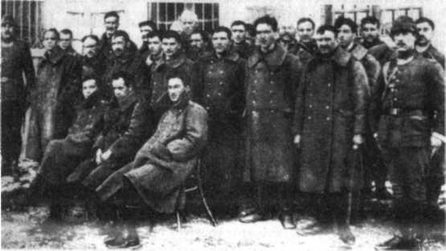
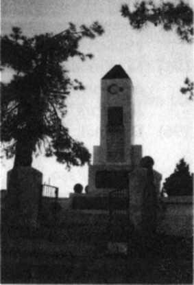
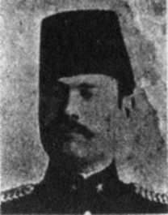
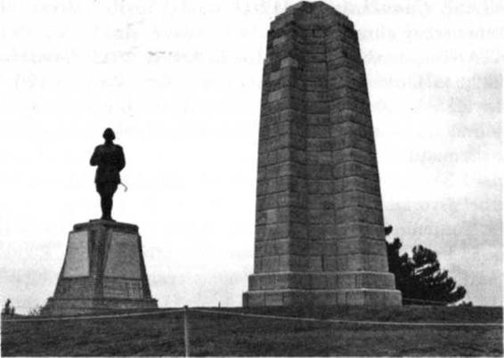
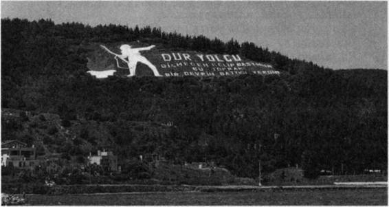

52) ATAġE, Çanakkale 2, s.250; F. Belen, Ġ9Ġ5 Yılı Hareketleri, s.162. Anadolu yakasında Erenköy ya da Ġntepe topçu grupları Eski Hisarlıktaki Ġngilizleri ateĢ altına alabilirlerdi. Ama bu grupların komutanı Alman Yarbay Wehrle, BirleĢik Donanma yeniden Boğaz'ı zorlar kuĢkusu ile kara hareketlerine karıĢmamıĢ, donanmanın hücumunu beklemiĢ, Eski Hisarlık'a yardım etmemiĢtir (Kadri Perk, s.38).
52a) Liman von Sanders, Türkiyede BeĢ Sene, s.91; inanılmaz gariplik sürüyor.
53) ATAġE, Çanakkale 2, s.24.
Liman PaĢa Saros'taki birlikleri elinin altında tutuyor, Weber PaĢa kolordusundan bir birlik vermiyor.
Güneyde kan gövdeyi götürüyor ama bu iki komutan iki uçtaki serbest birlikleri asıl savaĢ yerine yollamıyor.
Bunun üzerine 3. Kolordu Kurmay BaĢkanı Fahrettin Altay, Müstahkem Mevki Kurmay BaĢkanı Selahattin Adil ve 15. Kolordu karargâhında 1. ġube Müdürü YüzbaĢı Bursalı Mehmet Nihat, gizlice iĢbirliği yaparlar. Ordu Komutanının, durumu birlik yollamaya elveriĢli olan 15. Kolorduya ardarda emirler vermesini sağlarlar. Bu düzen sonucu, Ordu Komutanı son olarak Weber PaĢaya Gelibolu güneyine birlik göndermesini 25/26 Nisan gecesi kesin bir dille emredecektir (ATAġE, Çanakkale 2, s.24-29, 64-69; Mehmet Nihat, Seddülbahir Muharebeleri, Türk Kurmay Subaylarının Gözüyle Çanakkale SavaĢı, s.167, 214).
Ordunun esenliğini sağlamak için Türk kurmaylar entrika çevirmek zorunda kalıyor, yalan söylüyorlar. Ne acı bir durum! Çanakkale'yi yalnız bir kahramanlık destanı olarak görmek ve sanmak yanlıĢ ve eksik olur. Kahramanlık sahnelerinin arkasında bu ve benzeri birçok ibret verici, uyarıcı, uyandırıcı olay var. Bunları da bilmek gerek. M. Kemal ve arkadaĢları, bu acı sınavlardan geçtikleri için Milli Mücadele'de batının hiçbir oyununa gelmemiĢlerdir.
54) 27. ve 57. Alayların Çanakkale SavaĢı'nda çok özel yerleri var. Ġkisi de yiğitlikleri ve baĢarıları nedeniyle sancaklarına takılan altın ve gümüĢ madalyalarla ödüllendirilir. SavaĢın birinci gününden sonuncu gününe kadar yanyana dövüĢür, varlıklarının çoğunu yitirirler. DüĢmanın Arıburnu planını bu alaylar mahvetmiĢtir. Bu iki
alayı birbirinden farklı değerlendirmek haksızlık olur.
Ama 57. Alayın Ģehitliği var, 27. Alayın Ģehitliği yok.
27. Alaya olan saygı ve minnet borcumuzu da ödememiz gerekmez mi?
Gelibolu'da genel bir geliĢigüzellik bulunuyor. Bunun nedeni Gelibolu'yu bir bütün olarak görüp de ona göre düzenleyecek bilgili ve saygılı bir üst yönetimin kurulamamıĢ olmasıdır. Milli Park yönetimi de yanlıĢ bilgileri, haksızlığı, dağınıklığı ve zevksizliği önleyebilmiĢ ve düzeltebilmiĢ değil. Kendi de yanlıĢlar yapıyor. Opet'e Gelibolu'ya yaptığı bilinçli katkılar dolayısıyla yürekten teĢekkürler!
55) ATAġE, Çanakkale 2, s.121.
172 top, kara topçusu ölçüleriyle 44 batarya ediyor. Buna karĢılık Arıburnu'nda Türklerin 4 bataryası, 2 Mantelli topu, iki de Nordanfield'i var. Ġngiliz Harp Tarihi, Türk toplarının Anzakları 'dehĢete düĢürdüğünü' belirtiyor. Bu, topçuların ustalığının zaferidir.
56) lan Hamilton, s.104; Alan Moorehead, s.195; Thomazi, s.61: "Kı-yıbaĢına yığılan Anzak yaralılarının sayısı akĢam olmadan 2.000'i bulmuĢtu"; C.F. Aspinall-Oglander: "Kumsal yaralılarla o kadar çok dolmuĢtu ki cephane, levazım ve erzak için yer bulmak zorlaĢmıĢtı." (1. c, s.331) 57) M. Kemal, Arıburnu Raporu, s.28; 27. Alay, 3. Tabur Komutanı Yzb. Halis Ataksor'un 'düĢman askerlerinin kıyıya kaçtığı, sandallara bindiği vb. hakkında üç raporu, s.117, 121, 125; 25 Nisanı ay-rıntılı olarak anlatan raporu, s.268 vd.; Sermet Atacanlı, Atatürk ve Çanakkale'nin Komutanları, s.405-415 (57. Alay Komutanı BinbaĢı H. Avni Bey'in 25 Nisan-7 Mayıs günleri olaylarını anlatan savaĢ
raporu). CumhurbaĢkanlığı Belgeliğinde bulunan bu önemli rapor ilk kez bu eserde yer alıyor. 57.
Alayın 25/26 Nisan gece taarruzu hakkında en ayrıntılı belge bu.
57a) Simpson Kickpatrick Anzakların saka erlerinden biriydi. AteĢ hattına kadar su götürüyordu.
Yaralılar artınca boĢ dönmedi, ağır yaralı olanları eĢeğine yükleyip kıyıya taĢımaya baĢladı. Bu ağır ve tehlikeli iĢi yakınmadan, sessiz sedasız yapıyordu. Giderek dikkati çekecek, birliğin sevgilisi olacaktır. Anzaklar yurtlarına dönünce bu sade kahramanın heykelini diktiler. Cambera'daki SavaĢ
Anıtı müzesinde sakalar için dikilmiĢ bir genel anıt var (B. Vefa Karatay, Mehmetçik ve Anzaklar, s.
168).
57b) N.S teel-P. Hart, Yenilginin Destanı, s.64.
331 DiriliĢ / Çanakkale 1915
58) ATAġE, Çanakkale 2, s.122 vd.; Cemal Akbay, 19. Tümenin 25/26 Nisan Gece Taarruzu, Çanakkale Muharebeleri 75. Yd Armağanı, s.91 vd.
58a) N. Steel-P. Hart, Yenilginin Destanı, s.65. 58b) Milli Mücadele'de 17. Tümen Komutanı.
59) ATAġE, Çanakkale 2, s.68-69. 59a) lan Hamilton, s.100 vd.
59b) ġerif Güralp, Çanakkale Cephesinden Filistin'e, s.17; ġeref Bey Sakarya SavaĢTnda 1. Süvari Tümeni, 10. Alay Komutanı.
60) ATAġE, Çanakkale 2, s.264-267; C.F. Aspinall-Oglander, 1. c., s.247- 263
61) ATAġE, Çanakkale 2, s.264; yeni bölük Sığındere ağzında bulunan 6. Bölüktür. Bir yarım takımını Pınariçi'ne yollamıĢtı. O nedenle yarım takım eksik.
62) ATAġE, Çanakkale 2, s.278, 3. paragraf.
63) ATAġE, Çanakkale 2, s.269 vd.
64) C.F. Aspinall-Oglander, 1. c, s.326 vd., 331; Nigel Steel-Peter Hart, s.65 vd.; Alan Moorehead, s.197
vd.
65) lan Hamilton, s.103 vd.; C.F. Aspinall-Oglander, 1. c, s.329 vd.; Stoker'ın Denizaltısı, s. 108 vd.
66) ATAġE, Çanakkale 2, s.270 vd. (Yeni emir ağır bir dille eleĢtirilmektedir.) Ġlk gün, yalnız 9. Tümen Komutanlığı değil, 3. Kolordu ve Ordu Komutanlıkları da duruma egemen olabilmiĢ, harekete geçebilmiĢ değillerdir. Ġlk iki günün yapıcıları Arıburnu'nda 19. Tümen Komutanı M. Kemal, 27. Alay Komutanı Yb. ġefik Aker, Seddülbahir'de 26. Alay Komutanı Kadri Bey ile 3.
Tabur Komutanı BinbaĢı Mahmut Sabri Bey'dir.
67) C.F. Aspinall-Oglander, Gelibolu Askeri HarekâtTnda, Pınariçi Koyu savaĢını Ģöyle özetliyor:
"Ġnce düĢünüldü, uygun Ģekilde baĢladı, tereddütle sevk ve idare edildi, aĢağılanarak da (zelilane) sona erdi. Bu sahildeki çıkıĢ hareketinin tarihçesi iĢte budur." (1. c, s.263) Ġngilizlerin kaybı: 697 kiĢi (C.F. Aspinall-Oglander, 1. c, s.255/3. dipnot).
General Hamilton bu konuyla ilgili raporunda bu kaçıĢın nedenini gerçeklere aykırı olarak Ģöyle anlatıyor: "Türklerin burada ölçülmesi olanaksız derecede yüksek olan sayı üstünlükleri ve daima yeni takviye kuvvetleri almaları..." (ATAġE, Çanakkale 2, s.274) Ġngiliz birliği bir tugaydı, Türk kuvvetlerinin toplamı ise son aĢamada ancak bir tabur + 3 bölük + bir manga olmuĢtu. Demek ki Türk
Dördüncü Bölüm Notları 332
birliklerinin savaĢçılığı, Ġngilizlere çok kalabalık oldukları izlenimini vermiĢ. PaniklemiĢler.
BaĢkomutan bile panikten etkilenmiĢ. Thomazi diyor ki: "Askerlerinin yarısını kaybeden komutan tahliye kararını kendisi vermiĢti?' s.62; N. Steel-P. Hart, Yenilginin Destanında kaybı 700 olarak belirtiyor (s.87).
68) ATAġE, Çanakkale 2, s.270-271.
69) ATAġE, Çanakkale 2, s.275; Ġngilizler bu inceliği, insanca yaklaĢımı bir kez bile göstermediler.
Ama kendilerini 'uygar' diye niteliyorlar, bizi 'az geliĢmiĢ' diye. Uygarlığın ölçüsü makine değil de insanlıksa, savaĢ alanında biz onlardan çok daha uygardık. Çanakkale bunun kanıtıdır.
Bu Türk Ģövalyeliğini Ġngiliz resmi tarihi yarım ağız açıklıyor: "..Sahilde kalan yaralıların kaldırılması için faaliyete geçildi. Bu iĢe düĢmanın pek müdahalesi görülmedi." (CF. Aspinall-Oglander, 1. c, s.306) 70) ATAġE, Çanakkale 3, s.506-512'de denizaltı etkinlikleri ile ilgili bilgi var. Denizaltıların batırdığı küçük büyük bütün gemilerin adları kayıtlı. Ama AE-2'nin bir gambot batırdığı hakkında kayıt yok.
Nejat Gülen de, Dünden Bugüne Bahriyemiz kitabında Stoker'ın bir gambot vurduğu hakkındaki bilginin 'gerçeğe uymadığını' belirtiyor, s.306; Stoker'ın Denizaltısı adlı kitapta, Stoker'ın anılarına dayanarak, ayrıca bir de destroyer vurduğu yazılı (s.88). Bu da doğru değil. Stoker'ın tutsaklık günleri hakkında verdiği bilgiler de güven uyandırmıyor. Kaptanın anılarını yazarken Ģair yanının ağır bastığı ve hayalini çalıĢtırdığı anlaĢılıyor. Stoker Marmara'da kaldığı birkaç gün içinde bazı gemilere hücum etmiĢ, hiçbirini vurama-mıĢtır.
Kitabı çeviren ya da bir danıĢman, doğruları dipnot olarak verseydi Türk okuyucuyu yanılmaktan korumuĢ olurlardı. Tek yanlı bu tür yayınlar gerçeğe haksızlık oluyor.
71) ATAġE, Çanakkale 2, s.70 vd.
72) 31. Alayın 1. Taburu.
73) ATAġE, Çanakkale 2, s.72; Thomazi, s.66; Thomazi üç değil, dört gece taarruzu yapıldığını yazıyor; Charles F. Roux 'yedi taarruz' diyor (s.53); 39. Alay Komutanı raporunda 'on defa' diyor (Cela-laettin, Kumkale Muharebesi, s.179, Türk Kurmay Subaylarının Gözüyle Çanakkale SavaĢı); ġenf Güralp '13 süngü hücumu' diyor (s.22). Galiba hiç durmadan boğuĢulmuĢ.
74) ATAġE, Çanakkale 2, s.276-279; Ġ. Görgülü, On Yıllık Harbin Kadrosu, s.60.
333 DiriliĢ / Çanakkale 1915
75) 77. Alay dağılarak hem olumlu geliĢimi engelledi, hem 27. Alayın sol yanını boĢ bırakarak, o kadar kan pahasına alınan Kanlısırt'ın terk edilmesine yol açtı.
Üstün düĢmanla savaĢan 19. Tümen bir alayının dağılması üzerine zor durumda kaldı. Yardıma gelecek bir birlik de yoktu. 77. Alayın iki taburundaki Araplar, daha taburlar savaĢ hattına yaklaĢırken, ormanlık ve fundalık arazide, ayrılıp saklanarak, usul usul geride kalarak birliklerinden kopmaya baĢlarlar. Bir bölümü filonun ateĢi altında kalarak erir. Kaçanlar arkadan ateĢ ederek 27.
Alayın birliklerine zarar verir. Kaçmayanların büyük kısmı da geri çekilirken dağılırlar. Fahrettin Altay bazılarının, cephede kan gövdeyi götürürken, gerilerdeki çadırlara saklanıp nargile içtiklerini yazıyor.
ġefik Aker diyor ki: "Eğer bu Arap erleri yerinde bunlarla değiĢtirilen Türk erleri olsaydı, tekrar edilecek saldırıĢlarla, esasen gündüzden sarsılmıĢ olan Avustralyalıların o gece vapurlarına çekilmek mecburiyetinde kalmıĢ olacaklarına hükmolunabilir." (s.73-74) ATAġE, Çanakkale 2, bütün Arapların kaçmadığını, bazılarının Türklerle birlikte kaldığını açıklıyor.
M. Kemal, Arıburnu Muharebeleri Raporu, s.29-51 (1. ve 2. Tabur Komutanlarının olay hakkındaki raporları da var); ATAġE, Çanakkale 2, s. 123 vd.; Fahrettin Altay, s.90; ġefik Aker, s.68 vd.; Ġ. Gör-gülü, Atatürk'ün Emirleri, s.llj ġefik Aker, Arıburnu Muharebeleri Raporu, s.85 (Çanakale SavaĢı, Yay.
Haz. M. Albayrak).
76) Bazıları dövülür, üç elebaĢı kurĢuna dizilir (M. Kemal, Arıburnu Raporu, s.94/dipnot; Esat PaĢa, s.52; Ġzzettin ÇalıĢlar, Atatürk'le Ġki Buçuk Yıl, s.35).
77) Arabesk üslup bu inceliklerimize zarar veriyor; Ģimdi bazı aileler yüzyılların süzgecinden geçerek oluĢan o dikkat ve inceliği önemsemeyerek, çocuklarına Araplar gibi 'Muhammet' adını veriyor.
Birileri oğlu Muhammet'e, adını da söyleyerek küfredince acaba o baba rahatsız olmuyor mu? Arap yaĢayıĢ tarzı yalnız giyim kuĢamda değil, anlayıĢta da usul usul yayılıyor. Ümmetçi Osmanlı, Arapları 'kavm-i necip' diye pohpohlamıĢtır ama AraplaĢmamıĢtır. Bilinçsiz Osmanlılık, dincilik ve ümmetçilik akımı milli dokuyu, üslubu, kültürü tahrip ediyor, milleti yeniden yamalı bohça haline getiriyor, geri götürüyor, içten içe parçalıyor. Siyasetçiler bu gidiĢin nelere mal olacağını görmüyor, anlamıyor, kavrayamıyorlar.
78) ATAġE, Çanakkale 2, s.71-79; Fransız kaybı: 778, Türk kaybı: 1.735, kayıp oranı % 50'den fazla.
505'i esir veriliyor, 39. Alay Komutanı raporunda bunlardan 'gayr-i müslim askerler' diye söz ediyor (Ce-Dördüncü Bölüm Notları 333
lalettin, Kumkale Muharebesi, s. 178, Türk Kurmay Subaylarının Gözüyle Çanakkale SavaĢı).
ġerif Güralp, Yzb.Dr. ġerafettin Bey'in iki gün ara vermeksizin yaklaĢık 500 yaralıyı ameliyat ettiğini açıklıyor (s.27). Bu da bir cephe gerisi kahramanı!
Her araĢtırma kitabında buradaki yöntem ve komuta yanlıĢları üzerinde duruluyor. Bu haklı eleĢtiriler ve alınan olumsuz sonuç yüzünden burada iki gün içinde Ģehit verilen 467 subay ve er, 763
yaralı dikkatten kaçıyor. Buradaki birlikler emredilen her görevi gözlerini kırpmadan, 36 saat filonun vahĢi ateĢi altında kalarak yapmıĢlardı.
Yazık ki bu kahramanlar için ne bir anıt var, ne de bir yazıt. Anılmak için ille Gelibolu yakasında Ģehit ve gazi olmak mı gerekiyor? Buradaki kahramanlar neden hiç anılmazlar? Çanakkaleli gençler, nerdesiniz? Orhaniye ve çevresi yasak bölge değil, gezip görebilir, kahramanları anabilirsiniz.
Bu kesimde Orhaniye tabyasının kalıntıları ile küçük, bakımsız bir Ģehitlik ve söz konusu mezarlık var. Köyden iz kalmamıĢ. ġehitliğin nihayet düzenleneceğini öğrendim, çok sevindim. Serdar Halis Ataksor'a, Uğur Dündar'a ve Ģehitliği düzenleyeceğini vaadeden Çanakkale Valiliğine teĢekkür ediyorum.
79) 172 top Arıburnu + 345 top Seddülbahir = 517 top.
80) ATAġE, Çanakkale 2, s.280 vd.
81) M. Kemal, Arıburnu Muharebeleri Raporu, s.110; ATAġE, Çanakkale 2, s. 128,140.
81a) ġevki Yazman, Türk Çanakkale, s.113; ġ. Çamoğlu, Çanakkale Boğazı ve SavaĢları, s. 114 vd.
Liman PaĢa anılarında diyor ki: "Anadolu yakasındaki birlikler Albay (PaĢa) Weber'in güvenli ellerinde bulunduğundan o taraftan bir korkum yoktu." (s.88) ġimdi güney kesim için 'güvenli e! arıyor. Seddülbahir'e 5. Tümen Komutanı Albay Sodenstern'i atayacak. Kannengiesser gelince, bakalım ne olacak?
82) Liman von Sanders, s.91.
82a) Liman PaĢa, bazı emirlerini açıkça uygulamayan, adamlarını geri yollayan M. Kemal'e, birçok kez kızsa da, kızgınlığını bastıracak, sonuna kadar minnetini koruyacak, çok anlayıĢlı ve özenli davra-nacaktır.
82b) ATAġE, Çanakkale 2, s.131, 132.
83) C.F. Aspinall-Oglander diyor ki: "Türkler topraklarını santim santim savunuyorlardı." (1. c, s.338
vd.)
334 DiriliĢ / Çanakkale 1915
Teğmen Guy Nightingel savaĢı Ģöyle anlatıyor: "Köy korkunç bir tuzaktı. Her ev ve her köĢe baĢı keskin niĢancılarla doluydu ve sokakta görünmek kafana bir kurĢun yemen için yeterdi. O köyde birçok subay ve asker kaybettik. DüĢman hiç görünmüyordu. Görünen tek Ģey sadece bizimkilerin orada burada yere devrilmeleriydi." (Yenilginin Destanı, s.88) 84) Biri Albay Daughty Wylie'ydi. Uzun zaman Türkiye'de kalmıĢ bir Türk dostuydu. Bu nedenle savaĢ sırasında silah taĢımamak inceliğini göstermekte ama görevini de yerini getirmekteydi. Türk askerinin namus görevi de iĢgalcilere karĢı yurdunu savunmaktı. Bu üç subaydan ikisini vurdular. Biri de Wylie'ydi. Albay D. Wylie'nin bireysel mezarı Harapkale Tepe'dedir.
Tepede ve köyde Ģehit olmuĢ hiçbir Türkün mezarı yok. SavaĢta kaybettikleri kahramanlarına kim daha saygılı, Ġnglizler mi, biz mi?
85) Harapkale Tepe, köyün hemen yanında. Seddülbahir savaĢının yönetildiği bu tepede Ģimdi köyün su deposu var.
86) C.F. Aspinall-Oglander, sayı vermiyor, asker bitkin, kaybı ağırdı' diyor (s.340); köy içi çatıĢmadan sonra BinbaĢı Beckvvith'in taburu bitkinlikten savaĢamaz, köyün doğusunda mevziye girer (s.340).
Seddülbahir köyünde bu yiğit birliği, bu yaman direniĢi anan, anımsatan herhangi bir yazıt bulunmuyor. Köyde bir Çanakkale SavaĢı köyü olduğunu gösteren, anımsatan bir belirtiye, iĢarete de rastlamadım. Ertuğrul Koyu kumsalına ve çevresine yazlık evler yapılmasına izin veren tarihe saygısız, fırsatçı anlayıĢı da kınıyorum! Birileri bu yanlıĢlığı düzeltmeli.
87) ATAġE, Çanakkale 2, s.281.
88) Mahmut Sabri Bey'in Raporu, Çanakkale Hatıraları, 3. c, s.79; bu gazilerin sonu hakkında hiçbir kaynakta bilgi yok.
89) 9. Tümen Komutanı 3. Kolordu Komutanlığına, öğleye doğru 3. Tabur baskı altındayken, kaygıya kapılarak Seddülbahir'deki birliklerin Alçıtepe'ye kadar geri çekilmelerini önerdi. Böylece savunma hattı Alçıtepe köyünün de gerisine alınıyordu. Kolordu bu öneriyi kesinlikle reddetti (ATAġE, Çanakkale 2, s.293).
90) 3. Taburun kaybı: 6 subay, 630 er, % 57 kayıp (ATAġE, Çanakkale 2, s.288).
Ġngilizler kayıp sayısını açıklamıyor. ATAġE Çanakkale2, Ġngiliz resmi tarihindeki bazı bilgilerden yararlanarak Ġngiliz kaybının 2.600-3.000 olduğunu tahmin ediyor. Bu sayının içinde Türk keskin niĢancılarının avladığı üç tugay komutanı general, iki tugay komutan vekili albay, 9 tabur komutanı, çok sayıda subay var (s.288, 292; C.F. Aspinal Oglander, s.347).
Dördüncü Bölüm Notları 334
CF. Aspinall-Oglander 29. Tümenin durumu için Ģöyle diyor: "29. Tümen, üç gün önceki tümenin adeta bir gölgesi gibi kalmıĢtı." (s.347)
25 Nisanda 25. Alayın kaybı: 917 er, 26. Alayın kaybı: 10 subay, 970 er. Toplam: 10 subay, 1.887 er (3.
Taburun kaybı bu sayının içinde).
Eski Hisarlık'ın kuzey sırtındaki birlik yerinde kalmıĢtı. Buradaki Ġngilizlere hâlâ göz açtırmıyordu.
90a) Mahmut Sabri Bey'in Raporu, Çanakkale Hatıraları, 3. c, s.81.
A. Herbert diyor ki: "ġayet 25 Nisanda Liman von Sanders'in Al-çıtepe güneyindeki savunma düzeni sadece kıl kadar farklı (yani biraz daha güçlü) olsaydı, sonuç, bir Ġngiliz ordusunun uğradığı gelmiĢ
geçmiĢ en feci mağlubiyetlerden biri olurdu." (Aktaran Se-lahattin Çetiner, Çanakkale SavaĢı Üzerine Bir Ġnceleme, s.206)
91) Charles F. Roux, Çanakkale'de Ne Oldu, s.56.
92) Buraya Kemalyeri adını Kolordu Kurmay BaĢkanı Fahrettin Altay verir (F. Altay, s.93).
Liman PaĢa bu ara Reimond adında bir Alman binbaĢıyı 19. Tümene Kurmay BaĢkanı olarak yolladı.
M. Kemal bu oldu bittiyi kabul etmedi, Kurmay BaĢkanı Ġzzettin Bey'di. Kurmay BaĢkanlığı görevini Ordu Komutanının emrine rağmen Reimond'a vermedi. Küçük iĢlerde kullandı. Sonunda Reimond Ordu Karargâhına geri gitti (M. Kemal, Arıburnu Muharebeleri Raporu, s.64).
92a) Bu olay bazı kitaplarda ilerde Avustralya Genel Valisi olan Lord Richard Casey'in bir anısı olarak anlatılmaktadır. Lord Casey böyle bir anı anlatmamıĢtır. Öyle olsa bu olay, Lord Casey'in Genel Vali olduğu dönemde ilk Avustralya Büyükelçimiz olan Baha Vefa Karatay'ın kitabında yer alırdı.
YaĢanmıĢ, benzeri çok olan bir olay bu. Dilden dile geçerken abartılıp Lord Casey'e bağlanmıĢ.
Gelibolu'da bu olayın heykeli de var, Albayrak sırtının güneyinde, adı Mehmetçik'e Saygı anıtı.
Altındaki açıklama olayı Lord Casey'e bağlıyor. Bu yanlıĢ açıklamanın değiĢtirilmesi gerekir.
92b) Nejat Gülen, Dünden Bugüne Bahriyemiz, s.311 vd.; Stoker'ın De-nizaltısı, s.121 vd.
93) Ġ. Artuç, 1915 Çanakkale SavaĢı, s.199; 19. Tümen emrinde 36 top vardı.
93a) 64. Alay Komutanı BinbaĢı Servet Yurdatapan.
93b) Bu alay bir tabur eksik olmasına rağmen kahramanca dövüĢtü. Yiğit alaylar arasına girdi.
KırĢehir'in Çiçekdağ/Sefalı köyünden ünlü Mehmet ÇavuĢ da 64. Alaydandır. Subayının Ģehit olması üzerine birliğin baĢına geçmiĢ, direnmiĢ, birliğini süngü hücumuna kaldırarak tepeyi ve siperleri geri almıĢtır. Tepeye bu direniĢ ve hücum
335 DiriliĢ / Çanakkale 1915
nedeniyle Cesaret Tepe, aldığı siperlere Mehmet ÇavuĢ Siperleri adı verilmiĢtir. Bu kahramanlığı dolayısıyla rütbesi teğmenliğe yükseltilmiĢtir. Mehmet ÇavuĢ Anıtı Cesaret Tepe'sindedir. Ailesi sonradan Canpolat soyadını almıĢtır. YaĢlı oğlu YaĢar Canpolat'ın bazı gazetelerde ve internet sitelerinde yer alan bir açıklaması var: Babası Çanakkale SavaĢTnda bir Ġngiliz gemisini el bombasıyla batırdı diye Türk ordusundaki bir Ermeni YüzbaĢı tarafından hapsedilmiĢmiĢ vs... Bu açıklama bütünüyle gerçeğe aykırı. Adam yaĢlanmıĢ, uyduruyor. Acı olan, bu hezeyanı doğru haber diye değerlendiren, yayan ve basanlarda. Bunların Çanakkale SavaĢı ve rahmetli Mehmet ÇavuĢ hakkında hiç bilgilerinin olmadığı anlaĢılıyor. Gelin de demeyin: Bu kadar bilgisizlik ancak özel bir eğitimle kazanılır.
Çanakkale'nin kahraman askerlerinin adlarını taĢıyan baĢka siperler de var: Hamdi OnbaĢı siperi, Ali ÇavuĢ siperi, Halil OnbaĢı siperi, Ali OnbaĢı siperi (ATAġE, Çanakkale 3, 37. kroki).
94) M. Kemal, Arıburnu Muharebeleri Raporu, s.55 ve devamında, türlü baĢarılar ve olumsuz durumlarla dolu bu zor günü anlatan birçok ilginç birlik raporu var.
94a) Geç gelen alay 33. Alaydır. Kahraman komutanı Yarbay Ahmet ġevki Bey gece taarruzu sırasında Ģehit oldu. Anzaklar kıyıda tutunmalarını, bu alayın gecikmesine borçludur (ATAġE, Çanakkale 2, s.139).
94b) ATAġE, Çanakkale 2, s. 146.
95) 27/28 Nisan gece taarruzu, ATAġE, Çanakkale 2, s.140-145. Anzak kaybı: 179 subay, 4.752 er (N.
Steel-P. Hart, Yenilginin Destanı, s.102).
M. Kemal'e PadiĢah adına gümüĢ savaĢ madalyası verildi. O da 27., 57. ve 64. Alay Komutanları ile Ġzzettin Bey'i ve yaveri Kâzım'ı niĢanla ödüllendirdi (Ġzzettin ÇalıĢlar, Atatürk'le Ġkibuçuk Yıl, s.35; M.
Kemal, Arıburnu Muharebeleri Raporu, s.69, Esat PaĢa'nın madalya ile ilgili yazısı var).
33. Alay Komutanı Yarbay Ahmet ġevki Bey gece Ģehit olmasaydı, sanırım M. Kemal onu da niĢanla ödüllendirirdi. 72. ve 77. Alay Komutanlarını ödülendirmemiĢtir. AnlaĢılıyor ki ödülü hak edene veriyor!
95a) Necati Ġnceoğlu, Siper Mektupları, s.56.
95b) 7. Tümen Seddülbahir cephesine verilmiĢti. Ġki alayı (19. ve 20. Alaylar) gelmiĢti. 21. Alay yolda.
5. Tümen Arıburnu cephesine verilecek.
96) ATAġE, Çanakkale 2, s.140-145; bu gece Arıburnu kesiminde oluĢan cephe çizgileri, küçük dalgalanmalar dıĢında, Çanakkale
Dördüncü Bölüm Notları 335
SavaĢı'nın sonuna kadar değiĢmeyecektir. OluĢan çizgi kuzeyden güneye doğru Ģöyle: Cesarettepe doğusu-Bombasırtı-Kırmızısırt-Kanhsırt (ATAġE, Çanakkale 2, s. 142).
Anzaklar savaĢ sonuna kadar, yüksek mevkileri elinde tutan Türk silahlarının gölgesi altında kalacaklardır. Bu zor duruma iyi direnirler. BaĢlangıçtaki kural dıĢı davranıĢları gittikçe azalır.
96a) ATAġE, Çanakkale 2, s. 148-149.
96b) ATAġE, Çanakkale 2, s. 148.
96c) Saros'dan gelecek olan 5. Tümenin üç alayı 19. Tümen emrine verilir.
Ġstanbul'dan yollanacak tümenler 15. ve 16. Tümenlerdir. 15. Tümen Seddülbahir kesimine, 16.
Tümen Arıburnu kesimine verilecek. 16. Tümenin 125. Alayı deniz yoluyla 28 Nisan sabahı geldi, 19.
Tümen emrine girdi (ATAġE, Çanakkale 2, s. 145); öteki iki alayı, karargâhı ve bağlı birlikleri kara yoluyla geliyor: Ġstanbul-Uzunköprü demiryolu, Uzunköprü sonrası karayolu. 96d) Murat Çulcu, Ġkdam Gazetesinde Çanakkale Cephesi, 1. c, s.269.

97) Kirte, Alçıtepe köyünün eski adıdır. SavaĢın birinci aĢamasının ilk hedefi Kirte/Alçıtepe köyüydü, ikinci aĢamanın hedefi Kilitbahir platosu.
98) 20. Alay 2 taburluydu. 15. Alaydan bir tabur gelmiĢti. Bu alaya verildi. 20. Alay böylece üç taburlu standart bir alay oldu. Tüm takviye için bu nedenle 'bir alay' dedim. Türkler toplam 8.000 kiĢi kadardı.
99) ATAġE, Çanakkale 2, s.299 vd.; Siperin Ardı Vatan, s.68-71; CF. Aspinall-Oglander, 1. c, s.352 vd.; F. Belen, Birinci Cihan Harbinde Türk Harbi, 1915 Yılı Hareketleri, s.173 vd.
100) Bu kahraman komutanı unutmayınız.Onunla yine karĢılaĢacağız. Ailesi var mı, soyadları ne, öğrenemedim. Ben bu binbaĢıya 'Ana-farta' soyadını yakıĢtırıyorum. Neden mi? Ġlerde anlatacağım.
101) Cemalettin TaĢkıran, "Çanakkale SavaĢlarında Ġtilaf Devletlerinin Hasta ve Yaralılarımıza Saldırıları", Çanakkale AraĢtırmaları Türk Yıllığı, sayı 1, s.103 vd.; Ahmet Esenkaya, "Çanakkale Muharebelerinde Ġtilaf Devletlerinin SavaĢ Hukukuna Aykırı DavranıĢları", Çanakkale AraĢtırmaları Türk Yıllığı, sayı 4, s.51 vd.
102) ATAġE, Çanakkale 2, s.321; bir uçak en fazla 8 bomba taĢıyabiliyordu; General Hamilton uçağın River Clyde gemisini bombaladığını yazıyor (s.121).
102a) 19. Alay Komutanı Yarbay Sabri Bey.
103) Charles F. Roux, s.56 (Albayın vurulduğu hakkında); Yabancılar Lejyonunda dövüĢen maceracı bir Ġsviçrelinin anı defterinden:
"Fransız subaylarımız sabah akĢam, Gelibolu yarımadasına ayak basmamızla birlikte Türklerin kaçacaklarını söyleyip durmuĢlardı" (Aktaran ġevki Yazman, s.132) 104) ATAġE, Çanakkale 2, s.308-318; C.F. Aspinall-Oglander, 1. c, s.352-360.
Türk kayıpları: 2.378; Ġngiliz + Fransız kayıpları: 3.000'den fazla; bunun 1.000 kadarı Fransız. Türk kayıplarının büyük bölümünün nedeni donanmanın ateĢi.
105) Liman von Sanders, s.97; Nazmi Akpınar, s.63; ATAġE, Çanakkale 2, s.151.
105a) Aktaran M. Tuncoku, Anzakların Kaleminden Mehmetçik, s.39.
105b) ATAġE, Çanakkale 2, s.327-328; Liman von Sanders, s.92, 95.
105c) Bunlar 1918'de Mütareke ile birlikte su yüzüne çıkar, daha geniĢ örgütlenir ve özledikleri iktidara ortak olurlar. Dört yıl içinde daha da çoğalmıĢlardır. Ġngiliz iĢgalini bir nimet olarak görecek, Ġngiliz sömürgesi, bağlısı olmak amacıyla Milli Mücadeleyi baltalamak için ellerinden geleni yapacaklardır. Yöneticileri zafer üzerine gemiyi terk eden fare sürüleri gibi Türkiye'den kaçarlar. Bir insan yurt sevgisinden, bağımsızlık düĢüncesinden, onurdan, namustan, kiĢilikten bu kadar yoksun, bu kadar hain olabilir mi? Bu örnekler olunabileceğini gösteriyor.
Damat Ferit'in babası Hıristiyan Arnavut (melisor) dönmesidir (F. Belen, Türk KurtuluĢ SavaĢı, s.78).
105d) lan Hamilton, Gelibolu Günlüğü, s. 125.
106) Stoker'ın Denizaltısı, s.126 vd.; E. Mütercimler, Gelibolu, s.411-414; Sultanhisar'ın Kaptanı Ali Rıza Beyin Anıları, "Çanakkaleyi YaĢamak", Yeni Mecmua, Çanakkale özel sayısı, s.106-112.
Esir subay ve erler savaĢ sonuna kadar Afyon esir kampında tutuldular. SavaĢtan sonra ülkelerine döndüler.
Batırılan E-15 denizaltısından kurtarılarak esir
edilen ingiliz mürettebat
E-14 18 Mayısa kadar Marmara'da kaldı. (N. Gülen, Dünden Bugüne Bahriyemiz, s.318). Saros körfezine girerek Marmara'ya yaklaĢan gemiler, denizaltılar ile telsizle iletiĢim kurabiliyorlardı.
Aldığı yeni emre uyarak Kaptan Böyle da bazı gemilere saldırdı, Nurulba-hir gambotunu batırdı, Gülcemal vapurunu yaraladı. Yine Boğaz'ı geçerek Mondros'a döndü. Verdiği değerli bilgiler sonraki denizaltı kaptanlarının çok iĢine yarayacaktır.
Boğaz'da ve Marmara'da toplam 8 Avustralya, Ġngiliz ve Fransız denizaltısı batmıĢtır. Bunların ve batırdıkları gemilerin kalıntıları araĢtırılmaktadır. Bilgi için: SavaĢ KarakaĢ, Çanakkale Geçildi mi, Çanakkale SavaĢı, Yayına Hazırlayan: M. Albayrak, s. 133 vd. 106a) S. Çakır, Osmanlı Kadın Hareketi, s.124, derginin 7 Eylül 1913 günlü sayısından. Dil sadeleĢtirilmiĢtir. Annenin imzası Ģöyle: Bint-i Halim Seyhan (Halim Seyhan'ın kızı).
107) 27., 57., 72., 33., 64., 125,14, 15. Alaylar (8 alay); 5. Tümenin üçüncü alayı olan 13. Alay henüz yolda (9 alay = 3 tümen = bir kolordu eder). Mevcudu çok azalmıĢ olan 77. Alay genel olarak Kabatepe'de. Böylece Yarbay M. Kemal fiilen bir Kolordu Komutanı ile eĢdeğer olan Bölge Komutanı düzeyine yükselmiĢ durumda. Ama Esat PaĢaya saygı ile bağlı.
108) ATAġE, Çanakkale 2, s.155.
108a) ATAġE, Çanakkale 2, T Mayıs taarruzunun biraz da Enver PaĢa'nın sürekli taarruz isteyen 1
Mayıs günlü emrinin eseri olduğunu' belirtiyor (s.176).
109) Ġ. ÇalıĢlar, Atatürkle Ġkibuçuk Yıl, s.35 (30 Nisan); ġevki Yazman, Türk Çanakkale, s. 113 vd.; ġ.
Çamoğlu, Çanakkale Boğazı ve SavaĢları, s.115 vd.
110) Bugün Ġstanbul'da Ayasofya Camisindeki Cuma namazına Sultan ReĢat da katılmıĢtı. Kendisine Çanakkale baĢarısı dolayısıyla El Gazi unvanı verildi. Bu unvan eskiden sefere katılan padiĢahlara verilirdi. PadiĢahların sefere katılmaları bitti ama âdet sürüyor. Sarayında oturan padiĢahlara da cephedeki bir baĢarı nedeniyle gazi unvanı veriliyor.
Bir süre sonra gazetelere PadiĢahın yazdığı söylenen bir Çanakkale Ģiiri dağıtıldı. Eski BaĢmabeyinci Lütfi Simavi Bey, Sultan ReĢat'ın Ģiir sanatıyla hiç ilgisinin olmadığını açıklıyor, bu Ģiirin Yahya Kemal'e yazdırılmıĢ olabileceğini tahmin ediyor (Osmanlı Sarayının Son Günleri, s.206).
111) Büyük, genel taarruzlar yerine, yakın hedefli, sınırlı, yerel hücumlar yapma.
337 DiriliĢ / Çanakkale 1915
112) ġevki Yazman, Türk Çanakkale, s.113 vd.; ġ. Çamoğlu, Çanakkale Boğazı ve SavaĢları, s.115 vd.; ATAġE, Çanakkale 2, s.152-157; M. Kemal, Arıburnu Muharebeleri Raporu, s.70, s.87 vd.; F. Belen, Birinci Cihan Harbinde Türk Harbi, 1915 Yılı Hareketleri, s.178.
113) Liman von Sanders, s.95; Liman PaĢa bu taarruzların orduca tertip edildiğini (düzenlendiğini) açıklıyor, sorumluluğunu üstleniyor. Bu sonuçsuz, hesapsız, acele taarruzların kaç Türkün canına mal olduğunu göreceğiz.
114) Ġki alayı (19. ve 20. Alaylar) 9. Tümenin emrinde kaldı. Takviyeler son dakikada ve parça parça geldikleri, bir açığı kapamaya yollandıkları için bu karmaĢıklık sürüp gidiyor. Daha da sürecek. Bu durum ilk günlerin Ģartlarının ve ordunun takviye yollamada gecikmesinin ve takviyeyi planlı yapmamasının ürünü.
114a) Ben My Chree adlı bu uçak gemisini, Meis adası karĢısındaki bataryanın komutanı YüzbaĢı Mustafa Ertuğrul, bataryası ile 27 Aralık 1916'da batıracaktır. YüzbaĢı Mustafa Ertuğrul'un olağanüstü maceralarını öğrenmek isteyen gençlere Ģu güzel belgeseli tavsiye ederim: Mustafa Aydemir, Ben Bir Türk Zabitiyim, Denizler Kita-bevi, Ġstanbul, 2004.
115) ATAġE, Çanakkale 2, s.159. 115a) ATAġE, Çanakkale 2, s.341.
116) ATAġE, Çanakkale 2, s.346; toplam Türk gücü: 16.000 kiĢi, 12 makineli tüfek, 32 top (15. Tümen yolda); genel olarak: F. Belen, Birinci Cihan Harbinde Türk Harbi, 1915 Yılı Hareketleri, s.180 vd.
117) ATAġE, Çanakkale 2, s. 157-160.
118) ATAġE, Çanakkale 2, s.437-440.
119) Kaybın ağırlığını ve durumu göstermesi bakımından 21. Alay Komutanının raporundan alıntılar:
"Alayın 1. Taburunda bir subay, öteki taburunda iki subay kalmıĢtır. Yedi bölük komutanı Ģehit düĢmüĢtür. Cephane taĢıyıcıların hepsi vurulmuĢtur. Ġki gecedir doğru dürüst yiyecek ve su ikmali yapılmamıĢtır." (ATAġE, Çanakkale 2, s.356); 1 ve 2 Mayıs kayıpları, toplam 6.000 Ģehit ve yaralı.
Mühlmann birliklerin, geceleyin birbirini tanımaları için askerlerin beyaz kol iĢaretleri ile donatıldıklarını söylüyor (s. 104), Albay Kannengiesser ise anılarında bu bilgiyi yalanlıyor: "Kollara beyaz iĢaret taktırmak istedik ama ne beyaz bez, ne beyaz Ģerit bulabildik." (Aktaran: ġ. Yazman, s.130) Hangisine inanmalı?
120) ATAġE, Çanakkale 2, s. 52, 356, 360; ATAġE, bu birliğin 'büyük kısmının esir olduğunu' tahmin ediyor. Tahmin diyorum, çünkü bir belge yok.
Fransız karargâhında görevli Teğmen Charles F. Roux Çanakkalede Ne Oldu adlı güncesinde, 1
Mayıs ile 6 Mayıs arasında alınan Türk
Dördüncü Bölüm Notları 337
esirlerinin sayısını '50 kadar' diye belirtiyor (s.68). Bu konudaki tek yazılı bilgi bu. Bu bilgiden anlaĢılıyor ki birliğin büyük kısmı esir olmamıĢ. Belki 10-15 savaĢçı esir olmuĢtur. Çünkü 50 sayısının içinde, 6 Mayısa kadarki savaĢlarda verilen esirler de var. Aslında içlerinden birkaçının Fransız cephesini tersinden yarıp alayına kavuĢabilmesi bile bir mucizedir. Birliğin yarısının alayına kavuĢtuğuna inanabiliriz.
Çanakkale'de ne kadar çok film, dizi konusu var. Ama savaĢ filmi, dizisi çevirmek için o döneme iliĢkin üniformaları, silahları, ortamı, Ģartları, davranıĢları, üslubu, savaĢ ve kiĢi özelliklerini, ciddi kaynakları tarayarak öğrenip bilmek, sanat kaygısı taĢımak gerek. Uyduruk diziler o büyük olayları küçültüyor, yüceliğini zedeliyor, müsamereye dönüĢtürüyor. Çok ayıp oluyor. 120a) Albay Kannengiesser ertesi gün, 'düĢmanın bir karĢı taarruzuna di-renebilmek için Türk cephesinin Kemalyeri-Conkbayırı çizgisine kadar geri çekilmesini' önerir. M. Kemal bu gereksiz, akıl dıĢı öneriyi kesin olarak reddeder ve Albayı bir daha bu öneride bulunmaması için uyarır! (M. Kemal, Arıburnu Muharebeleri Raporu, s.87, 88)
Liman PaĢa bu geveze Albayı geri çağıracak, Albay von Sodens-tern'in yanına danıĢman olarak verecektir. 120b) Bu tabur imamlarından biri de Sivrihisarlı Ġbrahim Mehmet Efendidir. SavaĢırken yaralanmıĢtır.
121) ATAġE, Çanakkale 2, s.160-161; M. Kemal, Arıburnu Muharebeleri Raporu, s.51-86; Ġ. ÇalıĢlar, Atatürk'le Ġkibuçuk Yıl, s.35.
Türk kaybı yaklaĢık 6.000 (2.000 Ģehit, 4.000 yaralı) olarak tahmin ediliyor. Anzak kaybı bilinmiyor.
M. Kemal savaĢ sonunda yayımladığı emirde Ģöyle demektedir: "Bize verilen namus görevini eksiksiz yapmak için bir adım geri gitmek yoktur. Uyku, istirahat (dinlenme) aramanın, bu dinlenmeden yalnız bizim değil, bütün milletimizin sonsuza kadar yoksun kalmasına neden olacağını hepinize hatırlatırım." ATAġE, Çanakkale 2, s.161.
1 Mayıs sabahı filo Arıburnu kesimini, her zamankinden çok daha yoğun ve uzun bombardıman etti.
Anzakların yeni bir Türk taarruzundan çok çekindikleri anlaĢılıyordu.
122) ATAġE, Çanakkale 2, s.350, 357-360.
Seddülbahir cephesinde iki günlük Türk kaybı da yaklaĢık 2.000 Ģehit, 4.000 yaralı olarak tahmin ediliyor (s.360). DüĢman kaybı 2.700-3.000 (Ġ. Görgülü, 10 Yıllık Harbin Kadrosu, s.67; Siperin Ardı Vatan, s.75).
338 DiriliĢ / Çanakkale 1915
26. Alayın 3. Tabur Komutanı kahraman BinbaĢı Mahmut Sabri Bey'in de bu savaĢta yaralandığını, hastaneye kaldırıldığını düĢünüyorum. 25-26 Nisan günleri hakkındaki ünlü raporunu hastanede iken yazmıĢ, Harbiye Nezareti MüsteĢarlığına vermiĢtir. Yaralanma tarihini, Ordu Komutanı F.
Altay'ın rapora koyduğu notu dikkate alarak tahmin etmekteyim. F. Altay notunda diyor ki: "Bu muharebeden (25 Nisan muharebesi) takriben bir ay kadar sonra kendi yaralı ve tedavide iken..."
(Çanakkale Hatıraları, 3. c, s.64)
123) ATAġE, Çanakkale 2, s.360; C. TaĢkıran, Çanakkale AraĢtırmaları Türk Yıllığı I, s. 106 vd.; N. ve C. Yıldız, Arıburnu Kahramanları, Emin Çöl'ün Anıları, s.162; Agamemnon, savaĢ sonunda Mondros Mütareke AnlaĢması'nın imzalanacağı uğursuz gemidir.
124) lan Hamilton, Gelibolu Günlüğü, s.130-131.
124a) Çanakkale Hatıraları, c.3, s.360 (Münim Mustafa, Cepheden Cepheye).
125) Ġstanbul'a 5 Mayısa kadar 12.000 yaralı gelir (MareĢal Fevzi Çakmak ve Günlükleri, 1. c, s.319); HaydarpaĢa hastanesi, ağır yaralıların bakıldığı askeri hastaneye dönüĢtürülür, tıbbiye bir yıl için kapatılır (öğrenciler hastanelerde görevlendirilir, 1916'da yeniden açılır); Galatasaray, DarüĢĢafaka, bazı fakülte binaları vb. hastane yapılır. Bu yolla 16 hastane kurulur (H. Özdemir, s.11, 12, 21).
125a) ATAġE, Çanakkale 2, s.369; YüzbaĢı M. Nihat göreve 3 Mayıs günü 13.30'da baĢlar. Komuta kurulu hakkındaki gözlemleri Ģöyle: "Komuta kurulu düĢman ve dost vaziyetini, ileri hatların mevkilerini, düĢmanın kuvvetini ve hatta kendi elindeki birliklerin kuvvet ve sairesinden vaz geçtik, hakiki bir surette birlik numarasını bilmiyor, birliklerin mevki ve mahallinden de habersiz bulunuyordu." Mühlmann da anılarında durumu Ģöyle anlatıyor: "Emir-komuta zincirinde feci bir karıĢıklık hâkim. Birlikler büsbütün irtibatlarını yitirmiĢtir. Oraya ulaĢan birlikler derhal muharebeye sokulmak zorundaydılar. Birlikler yorucu gece yürüyüĢlerinden sonra dinlenmeksizin derhal ateĢe girdiler..." s.103-104 (Bu durumu bir gözlemci gibi anlatıyor. Oysa kendisi bu durumdan sorumlu Komutanlığın Kurmay BaĢkanı!)
Liman PaĢa'nın 20.000'e yakın askeri emanet ettiği komuta kurulunun niteliği ve düzeyi böyle! Bölge Komutanlığı kurulmasına, Albay von Sodenstern'in komutan atanmasına Esat PaĢanın haklı olarak içerlediği anlaĢılıyor, Bölge Komutanlığına uzak durması dikkati çekiyor.
126) 9. Tümenin raporundan: "...Subayların hemen hepsi Ģehit ve yaralı düĢmüĢtür. Erlerin yarısı zayiata uğramıĢtır." (ATAġE, Çanakkale 2, s.364)
Dördüncü Bölüm Notları 339
127) ATAġE, Çanakkale 2, s.365; lan Hamilton, Gelibolu Günlüğü, s.131-132.
127a) ATAġE, Çanakkale 2, s.390.
128) Atatürk'ün Bütün Eserleri, 1. c, s.218; Enver PaĢa bu mektuba yazılı bir yanıt vermemiĢtir.
129) Bu Alman üçlüsünün 15. Tümene verdiği bu akıl dıĢı görevin kaynağını Ģimdi belirtmek istiyorum, belki kuĢkuya düĢenler hemen kaynağı görmek isteyebilirler: ATAġE, Çanakkale 22, s.381-382 (15. Tümen Komutanının savaĢ raporu).
130) ATAġE, Çanakkale 2, s.370.
131) ATAġE, Çanakkale 2, s.370- 376.
131a) Celal Erikan, Çanakkale'de Türk Zaferi, s.39; Kadri Perk, Çanakkale SavaĢları Tarihi, s.156.
132) Bu savaĢlar sırasında Fransızlar tümen karargâhındaki hizmet erlerini, ahçıları bile savaĢa sürmek zorunda kalmıĢlardır. Ch. de Roux, s.70.
133) ATAġE, Çanakkale 2, s.366-392; Siperin Ardı Vatan, s.75-77; General CF. Aspinalll-Oglander, 1. c, s.389; Cari Mühlmann, s.106.
134) Ġlerde yeniden kurulacak ve Milli Mücadele'de de görev alacaktır. 134a) Kannengeisser'in anılarından aktaran ġ. Yazman, Türk Çanakkale,
s.132.
135) Liman vön Sanders, s.98; Liman PaĢa anılarında 1-4 Mayıs arasındaki gece taarruzlarının
'baĢarıyla neticelendiğini' yazıyor (s.95)! Liman PaĢa tarihi yanıltmaya devam ediyor.
ATAġE, Çanakkale 2, s.394; Liman von Sanders, s.403 (Albay von Sodenstern'in geri gönderilmesi hakkında Osmanlı Harp Tarihi Encümeninin gerçeği açıklaması).
136) ATAġE, Çanakkale 2, s.176-180.
137) ATAġE, Çanakkale 2, s.362; ġ. Yazman, Türk Çanakkale, s.107; Liman von Sanders, s.94.
138) O dönemde soyadı yok. Kadınlar, adlarını, babalarının, evlenince de eĢlerinin adlarıyla birlikte kullanıyorlar.
139) 18 Mart günü yaralanan Gaulois ve Souffren zırhlıları da hâlâ onarımdaydı. Charlemagne yeni onarımdan çıkabilmiĢti (Ch.F. Roux, s.81, 85); ġ.F. Gücüyener, Çanakkale'de Ġntepe Topçuları, Anafartalar Hatıraları, 3. c, s.165 vd.; A. Tomazi, Çanakkale Deniz SavaĢı, s.75; CF. Aspinall-Oglander, 1. c, s.390; ATAġE, Çanakkale 2, s.392.
Ġntepe bataryaları Komutanı BinbaĢı Hasbi Bey'dir (Kadri Perk, Çanakkale SavaĢları Tarihi, s.155).
Yarbay Werle Ġntepe ve Erenköy bataryalarının bağlı olduğu grup komutanıdır.
339 DiriliĢ / Çanakkale 1915
Ġntepe bir yazıt istiyor. Bir vefalı birim, kurum öncülük etse ne güzel olur.
140) ATAġE, Çanakkale 2, s. 164-165; General C.F. Aspinall-Oglander, 1. c, s.381-383.
Ġngiliz Resmi Tarihi diyor ki: "Türkler sahilde sedyecilerin yaralı taĢıdıklarını görür görmez, büyük bir alicenaplık (yücegönüllülük) göstererek ateĢi kestiler ve yaralıların hepsi filikaya konuncaya kadar bir tek silah atılmadı." (s.383)
141) Kadri Perk, s.70; Alman kumanyalarının farklı olduğu hakkında: Hakkı Sunata, Gelibolu'dan Kafkaslara, s. 169; Ali Fuat Erden, Suriye Hatıraları, s.100.
142) Ġngiliz Resmi Harp Tarihi Türk mevzilerinin durumunu gerçekçi olarak Ģöyle anlatıyor: "Türk siperleri henüz birbirlerine bağlanmamıĢlardı bile. Hiçbir noktasında tel örgüleri ile muhafaza altına alınmamıĢlardı... Ġngiliz birlikleri, henüz ancak doğal örtüler arkasında bulunan ileri kıtalar ile çarpıĢmıĢlardı." (C.F. Aspinall-Oglander, 1. c, s.424) 142a) ATAġE, Çanakkale 2, s.408; durumu göstermek için iki bilgi: 19. Alay % 82, 21. Alay % 60 kayıp vermiĢti (ATAġE, Çanakkale 2, s.410).
143) ATAġE, Çanakkale 2, s.413.
143a) Bir Alman denizaltısı 7 Mayıs günü Lusitania adlı büyük yolcu gemisini batırdı. Bin kadar yolcu öldü. Ġçlerinde yüzden fazla ABD'li vardı. Bu olay ABD'de Alman düĢmanlığını doruğa çıkarır.
ABD bir süre sonra Ġngiliz ve Fransızların yanında Almanlara karĢı savaĢa girecektir.
144) Ġkinci Kirte hakkında: ATAġE, Çanakkale 2, s.401-424; C.F. Aspinall-Oglander, 1. c, s.404-421; F.
Belen, Birinci Cihan Harbinde Türk Harbi, 1915 Yılı Hareketleri, s. 184 vd.
Türk kayıpları: 2.000, BirleĢik Ordu 6.500 (ATAġE, Çanakkale 2, s.424; C.F. Aspinall-Oglander, 1. c, s.421).
Ġngiliz ve Fransızlar üç gün içinde Türklere karĢı 18.000 top mermisi kullandılar (C.F. Aspinall-Oglander, c. 1., s.429).
145) ATAġE, Çanakkale 2, s.418; ġ. Yazman, Türk Çanakkale, s.107; ATAġE 'dağıldılar', ġ. Yazman
'kaçtılar' diyor. Bu çeliĢki sürüp gidiyor; Ch.F. Roux bu birlikten 6 Almanın Seddülbahir kesiminde Ġngilizlere esir düĢtüğünü yazıyor (s. 110). 12 makineli tüfekten son olarak ConkbayırTnda söz ediliyor (ATAġE, Çanakkale 3, s.351, 354). Bunlardan burada hiç yararlanılamadığı hakkında: ġ.
Yazman, Türk Çanakkale, s.167; Cevat Abbas Gürer, M. Kemal'in bunları kötü örnek oldukları için ordu emrine yolladığını yazıyor (Cepheden Meclise, s.29).
Dördüncü Bölüm Notları 340
145a) C.F. Aspinall-Oglander, 1. c, s.423.
146) ATAġE, Çanakkale 2, s.424; Frank Knight, s.34.
147) M. Nihat'tan aktaran: ġevki Yazman, Türk Çanakkale, s. 107; Kadri Perk, Çanakkale SavaĢları Tarihi, s.67 (Weber PaĢa'mn önerisi olarak).
147a) Tehlil: Lailaheillallah demek (=Allah'tan baĢta ilah yoktur).
148) Murat Çulcu, Ġkdam Gazetesinde Çanakkale Cephesi, 1. c, s.472-473'teki Çanakkale'den yollanmıĢ Bombasırtı ile ilgili yazıdan yararlanarak.
M. Kemal RuĢen EĢrefe Bombasırtı'nı Ģöyle anlatmıĢtır: "Ön siper-dekiler hiçbiri kurtulmamacasına bütünüyle düĢüyor. Ġkinciler onların yerine gidiyor. Fakat ne kadar imrenilecek bir soğukkanlılık ve tevekkülle. Öleni görüyor, üç dakika sonra öleceğini biliyor, hiç, ufak bir fütur bile göstermiyor, sarsılmak yok. Okumak bilenler ellerinde Kuran-ı Kerim, cennete girmeye hazırlanıyorlar. Bilmeyenler kelime-yi Ģehadet çekerek yürüyorlar." {Anafartalar Hatıraları, 3. c, s.37, R. EĢref Onaydın, Anafartalar Kumandanı M. Kemal ile Mülakat)
8/9 Mayıs gecesi Anzaklar Bombasırtı'nı ele geçirmek için beĢ kez hücum ederler, 600 ölü, 2.000 yaralı vererek geri çekilirler (ATAġE, Çanakkale 2, s.171; Ġ. ÇalıĢlar, Atatürk'le Ġkibuçuk Yıl, s.36). 13/14
Mayıs gecesi daha Ģiddetle hücum edecekler. 14 mayıs günü çıkan bir çatıĢmada bir Türk keskin niĢancısı Avustralya Tümeni Komutanı General Bridges'i vurup ağır yaralar (A. Moorehead, s.229).
General birkaç gün sonra ölür. General sedye ile taĢınırken Türkler ateĢi keserler (M. Tuncoku, Anzakların Kaleminden Mehmetçik, s.77, The Egyptian Gazette'den aktararak).
149) Avustralyalıların ve Yeni Zelandalıların milletleĢmesinde Çanakkale SavaĢı'nın büyük rolü olmuĢtur. Biz de o dönemde bir millet olduğumuzu yeni yeni öğreniyor, anımsıyorduk. Onlarla birlikte biz de Çanakkale ateĢinden geçerek yeniden uyanıp milletleĢmeye baĢladık. Dirildik. Bu milletleĢme emperyalizme karĢı bir uyanıĢ ve tepki olduğu için ırka dayalı değildi. Yurt içi bir kenetlenme, dayanıĢma, bilinçlenme olarak belirdi. Soya dayanmayan, özü yurtseverlik olan bu birleĢtirici, kucaklayıcı, insanca anlayıĢ Cumhuriyet döneminde netleĢti. Atatürk milliyetçiliği diye anıyoruz. Bu anlayıĢa karĢı çıkanlar var. Yurtseverliğe kimler, neden karĢı çıkar? Takdir sizlerin.
150) Albay RüĢtü Bey Sakarya SavaĢı'nda 61. Tümen Komutanı. YüzbaĢı Mehmet Nazım, Milli Mücadelenin ünlü 4. Tümen Komutanı.
340 DiriliĢ / Çanakkale 1915
Kütahya-EskiĢehir savaĢında Ģehit olacak, ġehit Albay Nazım Bey diye anılacaktır.
151) Saim Besbelli, Çanakkale'de Türk Bahriyesi, s.5, 25.
152) YüzbaĢı Firle'nin danıĢman olarak gemide bulunduğunu Türk kaynakları da açıklıyor. Ama bütün mürettebat Türk olarak kabul ediliyor. E. Mütercimler, Bülent Eryavuz'un arĢivine dayanarak gemide 11 Almanın daha bulunduğunu, Türk mürettebatın 81 kiĢi olduğu yazıyor (Gelibolu 1915, s.433). Geminin seyir defteri bulunsa gerçek anlaĢılır.
152a) Alan Moorehead, Çanakkale Geçilmez, s.214-215.
153) ATAġE, Çanakkale 2, s.180; Ġ. ÇalıĢlar, Atatürk'le Ġkibuçuk Yd, s.37; bazı kaynaklarda Enver PaĢa ile M. Kemal'in tartıĢtıkları yazılıyor. En güvenilir kaynak olan Ġ. ÇahĢlar'ın günlüğünde böyle bir bilgi bulunmuyor. ÇalıĢlar her önemli olayı günlüğüne geçirmektedir.
154) Goliath'ın batırılması konusunda da Türk ve Alman kaynakları arasında farklılıklar var. Bu bölümü çeĢitli kaynaklardaki birbiriyle tutarlı bilgileri dikkate alarak, tartıĢmalı hususlara değinmeden yazdım. Ġ. Görgülü, Çanakkale Zaferi Üzerine Alman Ġddiaları, Ģ.23-26; ATAġE, Çanakkale 3, s.25; Nazmi Akpınar, Çanakkale Deniz SavaĢları Günlüğü, s. 68 vd.; E. Mütercimler, Gelibolu 1915, s.430-434; S. Besbelli, s.15; A. Tomazi, s.78; S. BilbaĢar, s.228; N. Hakkı, Çanakkale Destanının 50. Yılı, s.131; ġ. Tunççapa, Çanakkale Muharebeleri Hatıraları, s.lll (Çanakkale Hatıraları, 3. c); Mühl-mann, s.120; Liman von Sanders, s.102; Ġngilizler Muavenet'in arka arka gelerek gözcüleri ĢaĢırttığı, Ġngiliz gemisi sanıldığı, ilk olarak kıçından saldırdığı düĢüncesindeler: C.F. Aspinall-Oglander, 1. c, s.437/dipnot; Ġkdam gazetesi 15.5.1915 günlü sayısında Ģöyle yazıyor: "Torpidomuz YüzbaĢı Ahmet ve Alman YüzbaĢısı Firle Efendilerin kumandasında bulunuyordu." (M. Çulcu, Ġkdam Gazetesinde Çanakkale Cephesi, 1. c, s.335)
154a) Monitör: Altı düz, bir ya da iki ağır topu olan küçükçe deniz aracı. Denizaltılara karĢı korunaklı.
155) Churchill Çanakkale'ye yollanacak yeni gemilere Amiral Fisher'in onayını almadan iki denizaltı ekler. Bunu öğrenen Amiral 15 Mayıs günü istifa edecektir (Alan Moorehead, s.218 vd.). Fisher'in Churchill'e yazdığı son not Ģöyle: "Siz Çanakkale'yi zorlamadan yanaĢınız. Buradan elinize hiçbir Ģey geçmeyecek. Hiçbir Ģey." (s.220) Askeri konularda askeri dinlemeyen politikacı tipi her ülkede var.
155a) ATAġE, Çanakkale 2, s.172; Mete Tuncoku, Anzakların Kaleminden Mehmetçik, s.77 (Generalin vuruluĢunu ve ölümünü bildiren The Egyptian Gazette'm haberi); General Bridges birkaç gün sonra ölecektir.
Dördüncü Bölüm Notları 341
156) Gemi Almanların ileri sürdüğü gibi YüzbaĢı Firle'nin komutası altında olsaydı YüzbaĢı Ahmet Saffet değil, YüzbaĢı Firle binbaĢılığa yükseltilirdi (Ġ. Görgülü, Çanakkale Zaferi Üzerine Alman Ġddiaları, s.26). Yükseltme iĢlemini yapan Alman Amiral Souchon'dur. Souchon'un Almanı ihmal edip Türkü yükseltmesi olası mıdır? Ahmet Saffet Ohkay ilerde Albay olacak, deniz kuvvetlerinde önemli görevlerde bulunacak, 3., 4. ve 5. Dönemlerde Elazığ milletvekilliği yapacaktır.
157) Bu kesimde 1. Süvari Tugayı, 6. Tümen, Gelibolu Jandarma Taburu var.
158) 19. Tümenin 77. Alayı yok sayılacak durumdaydı. O alaydan kalan askerler Kabatepe savunmasında görevlendirilmiĢlerdi. 77. Alay 19. Tümen kadrosundan çıkarıldı. 9. Tümene ait olan 27. Alay ile 3. Tümene ait olan 64. Alaylar 19. Tümenin emrinde bırakıldı. 19. Tümenin alayları Ģöyle belirlendi: 27., 57., 64. ve 72. Alaylar. Daha sonra 64. Alay da 18. Alayla değiĢtirilecektir. 19. Tümen hep 4 alaylı bir tümen olarak kalacaktır (18. Alay Saros kesiminde bulunan 6. Tümendendir, ATAġE, Çanakkale 3, s.76-77).
25 Nisanda Güney Bölgesindeki ve Arıburnu'ndaki kuvvetler 3. Kolordu Komutanı Esat PaĢa'ya bağlıydı. Esat PaĢa'nın genel olarak bu iki bölgedeki savaĢların yönetimine uzak durduğunu, ciddi bir giriĢimde bulunmadığını görüyoruz. Sorumluluğu Arıburnu'nda M. Kemal, Seddülbahir'de Halil Sami Bey taĢımıĢtır.
159) M. Kemal, Arıburnu Muharebeleri Raporu, s.111-116; C. Erikan, Komutan Atatürk, s.126-127; Suvla çıkırması ve Anafartalar SavaĢları M. Kemal'in ne kadar uzak görüĢlü olduğunu gösterir. Ama bu uyarısını üst komutanlar dikkate almazlar.
160) M. Kemal, Arıburnu Muharebeleri Raporu, s.118 (Esat PaĢa'nın yazısı).
161) Müsamerenin programı için: M. Çulcu, Ġkdam Gazetesinde Çanakkale Cephesi, s.340.
162) M. Kemal, Arıburnu Muharebeleri Raporu, s.130 (Aynı gün Esat PaĢa I. ÇalıĢlar Bey'e de gümüĢ
muharebe imtiyaz madalyası vermiĢtir).
Enver PaĢa ile M. Kemal'in arası hiç sıcak olmamıĢtır. Ama bu konudaki iddia ve söylentilerin büyük bölümü abartılı, bazıları gerçek dıĢıdır. Bu söylentiler yabancı yazarları da etkiliyor. Alan Moorehead'ı da etkilemiĢ, kitabını bu iliĢki hakkında gerçeğe aykırı sahnelerle süslemiĢtir. Mesela s.328-329. Tarih geçerli belge ve tanıklara dayanılarak yazılır. Dayanılmazsa yazılan tarih değil masal olur. Moorhead'de de masal paragraflar var.
341 DiriliĢ / Çanakkale 1915
163) Ġ. ÇalıĢlar, Atatürk'le Ġkibuçuk Yıl, s.38. 163a) Çanakkale 1915 Kanlısırt Günlüğü, s.41.
164) ATAġE, Çanakkale 2, s.184-211; F. Altay, s.97-98; Alan Moorehead, Çanakkale Geçilmez, çevirmen Günay Salman'ın babasının anılarına dayanarak eklediği not, s.226; Ġ. Artuç, Çanakkale 1915, s.223 vd.; G. Göncü-ġ. Aldoğan, Siperin Ardı Vatan, s.86-89; Kadri Perk, s.71 vd.; ġ. Yazman, Türk Çanakkale, s.115 vd.; F. Belen, Birinci Cihan Harbinde Türk Harbi, 1915 Yılı Hareketleri, s.187-190; BinbaĢı Burhanettin, 14 Mayıs-19 Mayıs Olayları, Türk Kurmay Subaylarının Gözüyle Çanakkale SavaĢı, s.113-135; Liman von Sanders, s.101; N. Steel-P. Hart, Yenilginin Destanı, s.124; Frank Knight, s.37; Alan Moorehead, s.230 vd.; her birliğin kayıpları hakkında ayrıntılı bilgi: ATAġE, Çanakkale 2, s.211.
DüĢmanın kaybı yaklaĢık 600 kiĢiydi (160 ölü, 468 yaralı). Bugün bir rastgele kurĢun güleryüzlü saka eri J. Simson'un hayatına son verdi.
Bu taarruz hakkındaki eleĢtiriler Ģöyle özetlenebilir: Ağır topçu yokken bu taarruza kalkıĢılması yanlıĢtı. Taarruz planı incelikten, hesaptan yoksundu. Ciddi, ayrıntılı bir hazırlık yapılmamıĢ, birliklerin yeni yerleĢime uymalarına fırsat verilmemiĢti. Taarruz genel olarak cephe boyunca kaba bir yükleniĢ oldu, felaketle sonuçlandı.
Liman PaĢa anılarında bu savaĢ için Ģöyle diyor: "...Bu taarruzun benim tarafımdan yapılmıĢ bir hata olduğunu kabul ederim. Bu hata, düĢmanın kuvvetini iyi takdir edememekten ileri gelmiĢti." (s. 102) Bu tek hatası mı? Bunu itiraf edince öbür hatalarından aklanmıĢ mı oluyor?
165) A. Zeki Soydemir Milli Mücadele'de Tümen Komutanı, ilerde milletvekili.
166) M. Kemal, Arıburnu Muharebeleri Raporu, s.146.
167) Etin kilosu 12-14 kuruĢ, soğanın okkası 8 kuruĢ, zeytinyağı 15 kuruĢ. SavaĢ öncesi fiyatların birkaç katı.
167a) Bu savaĢ zenginleri ile sade halkın hayatı hakkında yazı çok. Önemli biri: H. Ziya UĢalıgil, Saray ve Ötesi, 3. c, s.160-162.
168) Liman von Sanders, s.100-101; E. Mütercimler, Gelibolu 1915, s.151-152.
169) Serpil Çakır, Osmanlı Kadın Hareketi, s.64-72; Fatma Nesibe Hanım'ın konuĢması esas alındı, o döneme iliĢkin bazı kadın yazılarından küçük alıntılarla birleĢtirildi. Fatma Nesibe Hanım'ın bir baĢka konuĢması için: Tarih ve Toplum dergisi, Mart 1994.
Dördüncü Bölüm Notları 342
170) Destanın tamamı: Halil Ersin Avcı, Çanakkale Ruhu, s.155 vd.; Bo-yabatlı Mustafa'nın ailesi hakkında bilgi: Hüseyin Akın, Milli Gazete, 28.11.2007; destanın baĢı ve sonu: Üç yüz otuz, sözüm hakkın kelamı* PadiĢahın geldi büyük selamı Enver Beyin düĢman kırmak meramı
Boyabatlı Ömer oğlu Mustafa Yazdı bu destanı girerken safa Muradı gitmektir arĢı tavafa. ') 1330 =
1914
170a) Ġkmal iĢlerinin aksaması cephede birçok sorunlara yol açtı. Mesela 20 Haziranda Seddülbahir'de tüfek baĢına 180 fiĢek, sahra topu baĢına 200 mermi kalmıĢtı. Silah noksanı baĢlamıĢtı. 2. Tümenin 5.
Alayında 2.000 askere karĢı 700 tüfek vardı. Asker Ģehit ya da yaralıların silahlarını alarak savaĢa katılabiliyordu (Kadri Perk, Çanakkale SavaĢları Tarihi, s.80).
Ordu zaten bolluk içinde değildi. Ġyice darlığa düĢtü.
171) Otto Hersing, Çanakkale Denizaltı SavaĢı, s.42-44; N. Gülen, Dünden Bugüne Bahriyemiz, s.308; M. Çulcu, Ġkdam Gazetesinde Çanakkale Cephesi, 1. c, s.364; Thomazi, s.82; sadece 71 denizci ölmüĢtür.
F. Altay diyor ki: "Esat PaĢa denize dökülenlerin toplanabilmesini kolaylaĢtırmak amacıyla topçularımıza ateĢ kestirecek kadar büyük bir insanlık örneği gösterdi." (On Yıl SavaĢ ve Sonrası, s.106)
172) SavaĢ Kurulu üyeliği sürecektir (George H. Cassar, Çanakkale ve Fransızlar, s. 197). Ġkinci Dünya SavaĢı'na kadar Bakan olamadığı hakkındaki bilgi yanlıĢtır. 1917'de Cephane Bakanı olarak hükümete girecek, Harbiye, Sömürgeler ve Maliye Bakanlıklarında bulunacaktır. Sakarya SavaĢı sırasında Sömürgeler Bakanıydı (Bilal N. ġimĢir, Sakaryadan Ġzmir'e, s.243). Siyasi hayatı hiç kesilmemiĢtir.
Churchill'in, Enver PaĢa'nın oğlu Ali Enver'e "Senin baban benim siyasi hayatımı tam yirmi yıl geriye attı" dediği dayanaksız bir yakıĢtırmadır (ġ.S. Aydemir, Enver PaĢa, 3. c, s.220).
172a) Hanımlar cephe gerisindeki sahra hastanelerinde de gönüllü hemĢirelik ve hastabakıcılık yapmıĢlardır. Ġstanbul'a gelen yaralı sayısının çok artması üzerine hastane ve yatak sayısı yetersiz kalmıĢtı. Bazı hanımlar evlerinin tümünü ya da bir bölümünü hastaneye çevirdiler. ÇeĢitli semtlerde böyle 14 hastane açıldı (Serpil Çakır, Osmanlı Kadın Hareketi, s.73, dipnot 73).
173) Otto Hersing, Çanakkalede Denizaltı SavaĢı, s.47-49.
174) Halis Ataksor, Çanakkale Raporu, s.201.
342 DiriliĢ / Çanakkale 1915
175) Otto Hersing'in anılarını çeviren Bülent Erdemoğlu buranın Orak Adası'nın karĢısındaki bir koy olduğunu belirtiyor. U-21 5 Haziranda Ġstanbul'a geldi. Sevgiyle karĢılandı. Halic'e girdi. Uzunca bir bakımdan sonra 5 Temmuzda Boğaz'dan çıktıp Carthage adlı bir Fransız yük gemisni batırdı, geri döndü. Kasım 1915'te yeniden Ege'ye çıkarak Türkiye'den ayrıldı (Otto Hersing, Çanakkale Denizaltı SavaĢı, s.52-64).
Bu kahraman kaptanı saygıyla anıyoruz.
176) ATAġE, Çanakkale 3, s.lll.
177) Toprak altında kazılan tünel karĢı yanın siperlerinin altına kadar uzatılıyor, tünelin sonuna yığılan patlayıcı madde patlatılarak siperler yıkılıyor. Bu durumdan yararlanılarak baskın yapılıyor, saldırıya geçiliyor vb. Tünelin çapı bir insanın sürünerek geçebileceği kadar. Ġnsan boyu yüksekliğinde değil. Bu nedenle lağım deniliyor.
177a) Esat PaĢa, Çanakkale SavaĢı Hatıraları, s.118; Cahit Önder, Atatürk'ün Silah ArkadaĢları, YaĢayan Çanakkaleli Muharipler, s.21-22.
178) Mülazım Mehmet Sinan, Harp Hatıralarım, s.41.
179) Ġ. ÇalıĢlar, Atatürk'le Ġkibuçuk Yıl, s.39; C.F. Aspinall-Oglander, 2. c, s.25, dipnot 3.
180) Alman ırkçılığını Hitler değil, Hitler'i Alman ırkçılığı yaratmıĢtır. Alman ırkçılığı Ģimdi de açık-kapah sürüyor.
180a) Ġngilizler Kocadağ'ın batı kısmındaki bu kesime bakan yüzüne Sa-rıbayır diyorlar. C.F. Aspinal-Oglander burayı Ģöyle anlatmaya çalıĢıyor: "Dereler ve sırtlar o kadar kıvrımlı, sık dikenli çalılıklarla dolu, dik ve pürüzlü idi ki barıĢ zamanında bile gündüz buralarda mükemmel bir haritaya sahip olmaksızın insanların dolaĢması çok güçtür. Sarıbayır sırtlarının batı yamaçları birbirinden derin uçurumlarla ayrılmıĢ birçok korkunç eğri büğrü sırtlarla desteklenmiĢti." (2. c, s.200 vd.) Bu geniĢ ve karıĢık kesimde Ģu beĢ kuru dere ya da dere yatağı var: En doğuda Sazlıdere, Çaylakdere, Ağıldere, Kayacıkdere ve en batıda Azmakdere. Bu geniĢ, karıĢık kesimi Sazlıdere-Ağıldere kesimi diye anacağız. Olaylar çoğunlukla bu iki dere yatağı arasında geçecek.
181) M. Kemal, Anafartalar Muhaberatına Ait Tarihçe, s.5; M. Kemal Kuzey Grubuna yazdığı yazılarda olacakları ĢaĢrtıcı bir öngörü ile ayrıntılı bir biçimde anlatmaktadır (Anafartalar Muhaberatına Ait Tarihçe, özellikle s.8'deki 27.3.1331 günlü yazı ve öteki yazılar).
182) N. Gülen, Dünden Bugüne Bahriyemiz, s.317; A. Esenkaya, "Çanakkale Muharebelerinde Ġtilaf Devletlerinin SavaĢ Hukukuna Aykırı DavranıĢları", Çanakkale AraĢtırmaları Türk Yıllığı, sayı 4, say Dördüncü BölUm Notları 343
fa 55, 78-79; geminin hastane gemisi olduğunu, bu olaydan dolayı Kızılhaç Merkezi'ne yapılan Ģikâyet kanıtlıyor (A. Esenkaya, a.g.y., s.79).
183) Ġngilizlerin insanlık ölçüleri farklıydı. Kendilerinden olmayanlara farklı davranılabilirdi.
Uçakları da sürekli Türk sargı yerlerini, hastanelerini bombalıyorlardı. Nasmith iki gemi daha batırdıktan sonra 8 Haziranda Mondros'a döndü. Victoria Cross niĢanı ile ödüllendirildi.
Yerine ikinci kez Kaptan Boyle'un komutasındaki E-14 Marmara'ya girdi. Onu E-12, Haziran sonunda E-7 izleyecek. E-7 de Ġstanbul limanına girdi, Galata rıhtımında yük yüklenen mavnalara, cephane yüklendiğini sanarak hücum etti. Torpil rıhtıma çarparak patladı. Yine panik yarattı. 17 Temmuzda kıyıya yaklaĢarak Ġstan-bul-Ġzmit demiryolunu topa tuttu. 24 Temmuzda E-14 üçüncü kez Marmara'ya girdi, 12 Ağustosta çıktı, 5 Ağustosta E-11 girdi. Bu denizaltının yine büyük zararlar verdiğini göreceğiz (N. Gülen, Dünden Bugüne Bahriyemiz, s.321-323; ATAġE, Çanakkale 3, s.508
vd.).
184) M. Kemal bu kesimde gerekli önlemleri alır. GiriĢteki tepelerde dayanak noktaları, biraz geride berkitilmiĢ siperler hazırlatır (Anafartalar Muhaberatına Ait Tarihçe, s.4).
Arıburnu cephesinde birinci hatta kuzeyde 19. Tümen, güneyde 16. Tümen kalır. Ortadaki 5. Tümen Kuzey Grubu ihtiyatı olarak geriye çekilir.
Kabatepe ile Arıburnu arasına da, kısa bir süre sonra, dördüncü tümen olarak Kuzey Grubuna bağlanan 9. Tümen gelecek.
185) ATAġE, Çanakkale 3, s.29; Türkler: 9. Tümen 7.000 kiĢi, 12. Tümen 8.600 kiĢi, Güney Grubu ihtiyatları 3.000 kiĢi, toplam 18.600 kiĢi; taarruza General Hamilton'a göre 24.000 Ġngiliz katılacaktır (ATAġE, Çanakkale 3, s.34) + 10.000 Fransız (G. Göncü, ġ. Aldoğan, Siperin Ardı Vatan, s.93), toplam 34.000 kiĢi.
186) R.R. James, Gelibolu Harekâtı, s.300.
186a) Ġkisinin topu hasar gördü, birinin lastiklari parçalandı. Zırhlı araçlar geri çekildi. Bir iĢe yaramadılar (N. Steel-R Hart, Yenilginin Destanı, s. 138).
187) Bu taarruzların bir yararı olmayacak, buna karĢılık Anzaklar çokça kayıp vereceklerdi.
Anzaklar sağ kanatta ilk hamlede iki Türk siperini ele geçirmiĢlerdi. 27. Alay Komutanı ġefik Bey üç kiĢilik bir fedai bomba ekibi kurdu. Bombacılar karanlıkta bu siperlere sessizce yanaĢmayı baĢardılar.
Ġlk siperdeki iĢgalcileri, hiç beklemedikleri bir anda, el 343 DiriliĢ /Çanakkale 1915
bombası yağmuruna tutarak yok ettiler. Siperler geri alındı (ġefik Beyin raporu: ATAġE, Çanakkale 3, s.567 vd.).
Bu siperlerde ilk kez siper periskopları (gözetleme aygıtları) ele geçti. Türkler bu aygıtı ilk kez görüyorlardı (ATAġE, Çanakkale 3,

s.41-42).
188) 3. Kirte SavaĢı için genel: ATAġE, Çanakkale 3, s.27 vd. ve 3. ciltteki 4., 5., 6., ve 7. ekler; K. Perk, Çanakkale SavaĢları Tarihi, s.76-80; C.F. Aspinall-Oglander, 2. c, s.54 vd.; N. Steel-P. Hart, Yenilginin Destanı, s.135 vd.
19 Mayısta Arıburnu'nda büyük kayıp veren 2. Tümen dinlenmesi ve bütünlenmesi için Seddülbahir'e alınmıĢtı. Ġhtiyat olarak geride bulunuyordu. Gerekince savaĢa yine coĢkuyla katılmıĢ, kaybedilen siperlerin geri alınmasında büyük hizmeti geçmiĢtir (K. Perk, Çanakkale SavaĢları Tarihi, s.78). 188a) ġimdi burada, bu destan için dikilmiĢ olan Sonok Anıtı bulunuyor.
189) Girmeyi baĢaran birlik Ġngiliz 42. Tümenidir. Türk cephesinin 900 metre derinliğine kadar girmiĢtir. Harp tarihleri 'Ġngilizlerin bu kesimi güçlendirmek yerine yedekleriyle baĢka kesimleri destekleyerek' yanlıĢ yaptıklarını belirtiyorlar (ATAġE, Çanakkale 3, s.59). Örnek olarak Yenilginin Destanı: "Türklerin oluĢturdukları dinamik direnme, hattın (cephenin) ortasındaki ilk baĢarıların uyandırdığı umutları söndürmüĢtü. (...) Belki de Hunter Weston bir baĢarıyı kaçırmıĢtı. BaĢarıyı desteklemiĢ olsaydı Alçıtepe köyünün ötesindeki Alçı Tepe'nin yamaçlarına varabilirdi." (s.140) Sonok Anıtı Kadri Perk bugünün olağanüstü kahramanlarından üçünün adını veriyor: Astsubay Hüseyin Hüsnü, Hüseyin oğlu Ġsmail OnbaĢı, Er Ġbrahim oğlu Ramazan (s.79).
190) Olayı Korgeneral Arif Tanyeri anlatmıĢ, N. Hakkı Uluğ not etmiĢ ve yazmıĢtır. N. HakkTnın yazısında bazı boĢluklar, karıĢıklıklar var. Yazının genel akıĢa uygun olan bölümlerinden yararlandım: N.H. Uluğ, Çanakkale Destanının Ellinci Yılı, s.114-124; F. Gündo-ğan, Çanakkale SavaĢları, s.215-216.
191) Türk kaybı: 3.000 Ģehit + 6.000 yaralı, biraz da esir = 9.000 kiĢi ATAġE, Çanakkale 3, s.72-73); BirleĢik Ordunun kaybı: Ġngiliz kaybı 4.500 + Fransız kaybı 2.000 = 6.500 kiĢi (C.F. Aspinall-Oglander, 2. c, s.66).
Yahya ÇavuĢ da bu savaĢın ilk günü sağ kanatta ağır yaralanmıĢ, Eceabat hastanesine kaldırılmıĢ, 5
Ağustos günü Ģehit olmuĢtur (Cemalettin Yıldız, Seddülbahir Kahramanları, s.77). Gaziantep kahramanlarından ve Atatürk'ün yakın arkadaĢlarından Kılıç Ali Bey (Asaf) de bugün Alçı Tepe'de ayağından yaralandı. Ġstanbul'a gönderildi.
192) ATAġE, Çanakkale 3, s.82 (7 Haziran günlü Ordu emri).
193) Geri çekilmeyi önermesi: K. Perk, Çanakkale SavaĢları Tarihi, s.78; Thauvenay'ın Ġstanbul'a yollanması: ATAġE, Çanakkale 3, s.84; yarattığı sorunlar: ATAġE, Çanakkale 3, s.83, 88, 97; Liman PaĢa'nın Güney Grubu yönetiminden memnun olmayıĢı: ATAġE, Çanakkale 3, s.84 vd. ve ekler.
193a) Jenny Macleod, Gelibolu'nun Öteki Yüzü, s.168; C.F. Aspinall-Oglander, 2. c, s.69-80. 193b) Alan Moorehead, Çanakkale Geçilmez, s.317.
194) Nazmi Bey, Çanakkale Deniz SavaĢları Günlüğü, s.76 (9 Haziran 1915).
195) M. Kemal, Anafartalar Muhaberatına Ait Tarihçe, s.8-15 (yazıĢmaların sön bölümü ve söz konusu konuĢma); Ġ. ÇalıĢlar, Atatürk'le Ġkibuçuk Yıl, s.42.
196) Dayanak: Liman PaĢa'nın 30 Mayıs 1331 (13 Haziran 1915) günlü, Harbiye Nezareti Muamelat-ı Zatiye Müdürlüğüne yazdığı yazı. Liman PaĢa Halil Sami Bey'i 'yetersiz ve sağlıksız' olduğunu ileri sürerek zorunlu izinle Ġstanbul'a gönderdiğini açıklıyor, daha kolay bir göreve verilmesini ya da emekli yapılmasını öneriyor (Bu belge için Ġsmet Görgülüye teĢekkür borçluyum). Harbiye Nezareti Halil Sami Bey'i emekliye ayırmıĢtır.
Hastalığı uzun sürmüĢ olmalı ki bu iĢleme 20 Eylül 1924 günü itiraz edebilmiĢ, dilekçesinde 'hastalığı nedeniyle Milli Mücadeleye katılamadığını' belirtmiĢtir. 196a) 1 Temmuza kadar Ġstanbul'a 56.394
yaralı yollanacaktı (E. Mütercimler, Gelibolu, s.66).
197) Rapor aldığı halde köyüne gitmeyip birliğine dönen asker az değildir (C. Erikan, Çanakkale'de Türk Zaferi, s.58); Çanakkale'de 8 doktor ölmüĢtür, ikisi Ģehit. Ġddiaların tersine, Ģehit olan Tıbbiye öğrencisi yoktur (Dr. Fatma Özlen, Çanakkale'de Tıbbiyeli ġehitler, Bir Efsanenin Analizi, www.
galipolil915. org).
198) Gelibolu yarımadasından Boğaz'a dökülen baĢlıca dereler: Morto Koyu'na akanlar: Kirte deresi, Kanlıdere; Boğaz'a karıĢanlar: (Gü
345 DiriliĢ / Çanakkale 1915
neyden kuzeye doğru) Kerevizdere, Domuz deresi, Tenker deresi, Soğanlı dere, Havuzlar deresi.
198a) Direnek noktası: siperler, varsa tel örgülerle çevrili, birkaç makineli tüfekle donatılmıĢ egemen bir nokta.
199) Taarruzdan kaç gün önce bombardımana baĢladıkları hakkındaki bilgiler çeliĢkili. Bir gün ile üç gün arasında değiĢiyor. Kadri Perk, Çanakkale SavaĢları Tarihi, s.80; Ġbrahim Artuç, 1915 Çanakkale SavaĢı, s.246; ATAġE, Çanakkale 3, s. 122, s.595 (2. Tümen Komutanının savaĢ raporu).
Fransızların kullandığı mermi sayısı: 7,5'lik toplar 28.000, 6,5'lik toplar 10.000, ağır toplar 2.700, siper havanları 700 mermi atmıĢlar (K. Perk, s.80; C.F. Aspilall-Oglander, 2. c, s.96); dakikada 150 mermi attıkları hakkında bilgi: ATAġE, Çanakkale 3, s. 142 (Liman PaĢa'nın BaĢkomutanlığa raporu). SavaĢ
mı bu, vahĢet mi?
200) Kadri Perk, Çanakkale SavaĢları Tarihi, s. 178; YüzbaĢı Kemal Bey ertesi günü hastaneye yetiĢtirilir. 26 Haziran sabahı Ģehitlik rütbesine yükselecektir. Mezarı Havuzlar ġehitliğindedir.
Savunduğu tepeye, adını ebedileĢtirmek için Kemalbey Tepesi adı verilmiĢtir.
201) ATAġE, Çanakkale3, s.115-136; C. F.Aspinall-Oglander, 2. c, s.94-98.
Türk kaybı 6.000, Fransız kaybı 2.500'den fazla. Türk kaybının büyük bölümü yoğun ve uzun bombardımandan dolayı. 2. Tümen birkaç gün sonra Asya yakasına sevkedilir.
202) Charles F. Roux, Çanakkale'de Ne Oldu?, s. 130.
203) Charles F. Roux, Çanakkale'de Ne Oldu?, s.131-133.
204) MareĢal Fevzi Çakmak ve Günlükleri, 1. c, s.325; Ģaki: haydut.
205) Aktaran M. Bardakçı, Hürriyet, 21.9.2003; arĢın: yaklaĢık 70 cm. uzunluğunda bir Osmanlı ölçüsü.
206) Ġngiliz ve Fransız bayrağı altında dövüĢen Hindistanlı ve Kuzey Afrikalı Müslüman askerleri Türk ordusuna katılmaya çağıran bildiriler de attı. Cihat fetvası ve bildirisi bir iĢe yaramamıĢtı, bu yarar mıydı? Ġngilizler zaman zaman Türkleri teslim olmaya çağıran bildiriler atıyorlardı siperler üzerine. Ġki yanın bildirilerinin hiçbir etkisi olmamıĢtır.
207) Ġngilizler bu savaĢta bu sayıyı aĢarak 16.260 mermi kullanırlar (C.F. Aspinall-Oglander, 2. c, s.
100, 4 sayılı dipnot).
208) ġ. Güralp, Çanakkale Cephesinden Filistin'e, s.54.
209) Sığındere SavaĢları hakkında genel: ATAġE, Çanakkale 3, s. 141 vd.; C.F. Aspinall-Oglander, 2. c, s.98-112; G. Göncü-ġ. Aldoğan, Siperin Ardı Vatan, s.97 vd.; F. Belen, Birinci Cihan Harbinde Türk Harbi, 1915 Yılı Hareketleri, s.198 vd.
210) Charles F. Roux, s.140 vd.; Gouraud, Türkler ve Atatürk iliĢkileri hakkında ayrıntılı bilgi: Sermet Atacanlı, Atatürk ve Çanakkale'nin Komutanları, s.202-262 (Bu bölümde 'Ġntepe topları' hakkında bilgiler de var).
211) Taarruzun öncüsü olan 70. Alay 3. Tabur Komutanı BinbaĢı ReĢat Çiğiltepe yaralanır ama görevini bırakmaz. Zorlukla geri gönderilir. Rahmetli Çiğiltepe 27 Ağustos 1922'de görevini söz verdiği saatte yerine getiremediği için intihar eden 57. Tümen komutanıdır; bu taarruzda 3. Tabur imamı Hüseyin Efendi de ön safta yer almıĢtır (ATAġE, Çanakkale 3, s.181; Kadri Perk, Çanakkale SavaĢları Tarihi, menkıbeler bölümü, s.171 vd.).
212) ATAġE, Çanakkale 3, s.175, 177, 178.
213) Hiçbir aĢamada geri çekilmeyi düĢünmemesi, çekilmeyi düĢünenlere kesinlikle karĢı çıkması, Liman PaĢa'nın artılarının en önemli-sidir.
Weber PaĢa'nın geri çekilme emri ve sonrası hakkında: ATAġE, Çanakkale 3, s.209-210; ġevki Yazman, Türk Çanakkale, s.141.
214) Faik PaĢayı Güney Bölgesi gerisinde ihtiyat birliği olarak kurduğu 2. Kolordu, sonra da Saros Grubu Komutanlığına getirecektir. Faik PaĢa Çanakkale'den sonra atandığı Doğu Cephesinde 1916'da Ģehit olur.
215) ATAġE, Çanakkale 3, s.205-207; Ġ. Artuç, 1915 Çanakkale SavaĢı, s.249; 28-30 Haziran arası Ġngiliz kaybı 3.800 kiĢi (C.F. Aspinall-Oglander, 2. c, s.108, 2 nolu dipnot); daha sonraki kayıpları hakkında bilgi yok; savaĢın akıĢına bakarak, bunun 1.200 kiĢi olduğunu tahmin ettim: 3.800 + 1.200 = 5.000 kiĢi.
Çanakkale SavaĢı'nda en çok kayıp verilen, en kanlı savaĢlar Sığın-dere savaĢları olmuĢtur.
216) Sığındere Sargı Yeri ġehitliği Sığındere'nin kuzey kesiminde, Alçı-tepe köyünün batısındadır.
Buranın biraz güneyinde Nuri Yamut Sığındere ġehitliği var. Nuri Yamut PaĢa, teğmen olarak Çanakkale SavaĢı'na katılmıĢtır. Gelibolu'da 2. Kolordu Komutanıyken Sığındere Ģehitleri için burayı yaptırmaya baĢlamıĢ, ödenek bitince tek evini satarak bu Ģehitliği tamamlamıĢtır. Ona da Ģehitlerimize de rahmet olsun!
Sargı yerinin Ġngiliz donanması tarafından ateĢ altına alınarak burada binlerce yaralının öldüğü hakkındaki iddia, gerçek dıĢıdır. Tarihe yalan katmadan duramıyoruz.
217) Ġngiliz Resmi Tarihi bu insanlığa ve gerçek askerliğe aykırı tutumun nedenini Ģöyle açıklıyor: Cesetler toplanır ve aradaki alan temizlenirse, Türkler taarruz ederlermiĢ. Oysa Ġngiliz askeri yor 346 DiriliĢ / Çanakkale 1915
gun, cephane de kısıtlıymıĢ. General Hamilton ateĢkes önerisini bu yüzden kabul etmemiĢ (C.F.
Aspinall-Oglander, 2. c, s.112). Gazla yakmaları: Mülazım Mehmet Sinan, Harp Hatıralarım, s.40; savaĢ alanının durumu: Prof.Dr. Abdülkadir Noyan'ın anıları, C. Yıldız, Seddülbahir Kahramanları, s.158-159).
Bu acımasızlıkları yaĢayan Türkler sömürgeci ahlakını her gün biraz daha iyi anlıyor ve uyanıyorlardı.
Tarihi anlayarak okuyup öğrenenler bu uyanıklığı sürdürüyorlar. Çanakkale'yi insan aklı ve emeği olmadan kazanılmıĢ bir zafer sananların uyanmaları ise çok zor. Onlar rüya âleminde yaĢıyorlar.
Türkiye dıĢında, Müslüman devletler ve toplumlar akılcı eğitime önem vermedikleri için her açıdan geriler, sömürülüyorlar, karıĢıklık içinde yaĢıyorlar, demokrasiden uzaklar, insanlık ailesine yazık ki hiç bir katkıları yok. Batının buluĢları ile yaĢıyorlar. Biz de azar azar akılcı eğitimden uzaklaĢmaktayız. Birçok aydınımız, bilim adamımız, yazarımız, politikacımız, hatta bazı öğretmenle-rimiz bunun nasıl bir facia olduğunun farkında değil. Olaylara günübirlik bakıyor, tarihten ibret alarak ileriyi göremiyorlar. Osmanlı akılcı eğitimin önemini kavramadığı için durakladı, geriledi, çöktü ve öldü. Bunu hiç unutmamak gerek!
218) ġerif Güralp, Çanakkale Cephesinden Filistin'e, s.53.
219) Almanlar arası entrikalar, çekiĢmelerle ilgili hikâyeler sayısız. Ġkinci büyük çıkarmanın eĢiğinde Berlin, Ġstanbul'daki Alman çevresinden yapılan Ģikâyetler üzerine Liman PaĢa'yı geri çağıracak, Liman PaĢa silahtan daha iyi kullandığı kalemi sayesinde yerinde kalmayı baĢaracaktır. Bu ilginç hikâye için: Liman von Sanders, Türkiye'de BeĢ Sene, s. 107 vd.
220) Vehip PaĢa'nın emrinde ikiĢer tümenli iki kolordu vardı. Birinin komutanı Alman Trommer PaĢaydı, ikinci kolordunun komutanı Fevzi (Çakmak) PaĢaydı. Trommer PaĢa Türk cephesinin sağ kanadından, Fevzi PaĢa sol kanadından (doğu) sorumlu olacak.
221) Enver PaĢa bu dönemde de daha yeni savaĢtan çıkmıĢ ve çok ağır kayıp vermiĢ olan Güney Bölgesinde yeni bir taarruz yapılmasını telkin etmektedir (ATAġE, Çanakkale 3, s.224-225, Enver PaĢa'nın emrinin 3. maddesi); Liman PaĢa da Vehip PaĢa'yı taarruza zorlayacak ama Vehip PaĢa kabul etmeyecektir (ATAġE, Çanakkale 3, s.303-304).
221a) Söz konusu yeni tümenler Lord Kitchener'in Ağustos 1914'teki çağrısına katılan gönüllülerden oluĢuyordu. 10 ay eğitim görmüĢlerdi. A. Oglander diyor ki: "Subaylar Ġngiliz kahramanlığının çiçeği idiler." Tugay ve tabur komutanları, yaĢ ve kıdem aranılan baĢlıca Dördüncü Bölüm Notları 346
nitelik olduğu için, elli yaĢını geçkin subaylardı (C.F. Aspinall-Og-lander, 2. c., s.155). 221b) Kurul üyeleri: Mehmet Emin Yurdakul, Ahmet Ağaoğlu, Hamdullah Suphi Tarıöver, Ömer Seyfettin, Enis Behiç Koryürek, Orhan Seyfi Orhon, Celal Sahir Erozan, Ali Canip Yöntem, Ġbrahim Ala-addin Gövsa, Hıfzı Tevfik, Hakkı Süha, besteci Rauf Yekta, ressam Ġbrahim Çallı, Yusuf Razi, Müfit Ratıp, Nazmi Ziya, Muhittin, Se-lahattin (ATAġE, Çanakkale 3, s.599-601, gezi ile ilgili resmi rapor).
Hava değiĢim raporuyla köylerine dönen erlerden bilenler, izinle Ġstanbul'a giden subaylar M. Kemal adını yaymaya baĢlarlar. Bu geziden sonra M. Emin Bey Tan Sesleri adlı uzun Ģiirinde M. Kemal'in adına yer verir: Ey bugüne Ģahit olan sarp hisarlar/ Ey kahraman Mehmet ÇavuĢ siperleri/ Ey Mustafa Kemallerin aziz yerleri/ Ey toprağı kanlı dağlar, yanık yerler. 221c) Emin EriĢirgil, Ġslamcı Bir ġairin Romanı, s.241 vd.; Kurul Kuzey ve Güney Bölgelerini ziyaret edip 23 Temmuzda Ġstanbul'a dönecektir.
222) Bu savaĢa Ġngilizler Kanlıdere SavaĢı, Fransızlar bütün taarruzlarını dikkate alarak, BeĢinci Kerevizdere SavaĢı diyorlar. SavaĢ hakkında genel olarak: ATAġE, Çanakkale 3, s.238 vd.; C.F.
Aspinall-Oglander, c. 2., s.113 vd.
Güney Grubu'nun yerleĢik hale geçtiği zaman, genel kuvveti yaklaĢık 45.000 kiĢi olacak (ATAġE, Çanakkale 3, s.228). 222a) ATAġE, Çanakkale 3, s.247.
223) Miralay Süleyman ġakir, Cepheden Hatıralar (6. Tümen Komutanı), s. 110; ATAġE, Çanakkale 3, s.250; F. Belen, Birinci Cihan Harbinde Türk Harbi, 1915 Yılı Haraketleri, s.202.
Türklerin kaybı 9.500, Ġngiliz ve Fransızlarınki 4.000 (ATAġE, Çanakkale 3, s.251, 254; C.F. Aspinall-Oglander, 2. c, s.128). Alçı Tepeyi ele geçirmek için yaptıkları üç taarruzda Ġngilizlerin toplam kaybı 12.300, Fransızlarınki 4.600, toplam 16.900. Ama Alçı Tepe hâlâ Ġstanbul kadar uzak.
12 Temmuz günü bir top mermisi 1. Fransız Tümeni karargâhına düĢmüĢ, Tümen Komutanı ile Kurmay BaĢkanı ölmüĢtür (Charles F. Roux, s.155).
224) Serpil Çakır, Osmanlı Kadın Hareketi, s. 170; bu haberi veren Kadınlar Dünyası yazarı soruyor:
"Ecnebi Madam böyle derse, bu tedbire müracaat ederse, biz Osmanlı hanımları mitralyözle mi so-kağa çıkalım?"
Sokağa çıkan kadın laf atılmayı, rahatsız edilmeyi, tacizi hak etmiĢ sayılıyordu. AnlayıĢ böyleydi.
Kimse de bu ilkelliği durdurmak için
347 DiriliĢ / Çanakkale 1915
bir Ģey yapmıyordu. Cumhuriyet kadınlar konusunda utandırıcı bir miras devralmıĢtır. ġimdilerde bu anlayıĢ adım adım geri geliyor.
225) Liman PaĢa Esat PaĢa'nın bu olayı önemsemediğine anılarında değiniyor. Ama kendi de bu olayı iyi değerlendirmemiĢtir. Bunun bir çıkarma yapılacağını belirtecek yeterli bir alamet olmadığını ya-zıyor. Aklı yine Saros'a takılı (Liman von Sanders, Türkiye'de BeĢ Sene, s.106). Ama Kurmay BaĢkanı Kâzım Bey'in konuĢmasından buranın savunmasını üzerine almadığı için Liman PaĢa'nın M. Kemal'e içerlediği anlaĢılıyor (F. Altay, On Yd SavaĢ ve Sonrası, «.109).
225a) Ġsmail Çolak, Çanakkale'nin Kahraman Mekteplileri, s.22; bazı kitaplarda on binlerce üniversite, lise öğrencisi Ģehit olmuĢ gibi çarpıcı iddialar yer alıyor. Bu doğru değil. Çok abartılı bir iddia. Bu konuda ciddi, güvenilir bir araĢtırma var: Osman Kafadar-Ahmet Esenkaya, "Çanakkale SavaĢlarında Kaybedilen Eğitim GörmüĢ Nesiller Üzerine DüĢünceler ve Öneriler", Çanakkale AraĢtırmaları Türk Yıllığı, sayı 2, s. 135 vd.
226) ATAġE, Çanakkale 3, s.264, 269, 272, 297, 273.
227) Veliaht: PadiĢahın ölümü ya da tahttan indirilmesi halinde, padiĢah olacak Ģehzade.
228) Veliaht adına konuĢan kimse Ayandan Hüsnü PaĢa'dır. Veliaht buradan Seddülbahir'e geçer.
Güney Bölgesini ziyaret edip Ġstanbul'a döner. Bir süre sonra ruhsal sorunları artacak, intihar edecektir (Ġ. ÇalıĢlar, Atatürk'le Ġkibuçuk Yıl, s.47-48; F. Çakmak'ın Günlükleri, 1. c, s.330; Veliaht ve hastalığı hakkında bilgi için: Lütfi Simavi, Osmanlı Sarayının Son Günleri, s.220 vd.; Ali Fuat Türkgeldi, Görüp ĠĢittiklerim, s.119-120, eğitimsizlikleri hakkında, s.124).
229) ATAġE, Çanakkale 3, s.284-291; 8. Kolordunun Komutanı General Hunter Weston hastalanır, yerine geçici olarak 42. Tümen Komutanı General W. Douglas getirilir, sonra da Ġngiltere'den gelen General F.C. Davies.
229a) 25 Nisan-1 Ağustos günleri arasında BirleĢik Ordu'nun kaybı yaklaĢık 75.000 kiĢiydi. Bunun 25.000'i Fransızdı. Türk zayiatı yaklaĢık 115.000 kiĢiydi. Bunun 35.000 kadarı Ģehitti (G. Göncü-ġ.
Aldo-ğan, Siperin Ardı Vatan, s. 104). Ġstanbul'a yollanan yaralılardan Ġstanbul tarafındaki hastanelerde Ģehit olanlar Edirnekapı Ģehitliğine gömülüyordu. Bu Ģehitlikte 20.000'den fazla Ģehidimiz var. Anadolu yakasında Ģehit olanların Karacaahmet mezarlığında toprağa verildiklerini sanıyorum.
230) ATAġE, Çanakkale 3, s.280-281.
Dördüncü Bölüm Notları 347
231) Bu konferans 1913 yılında, kapitülasyonlar kaldırılmadan önce verilmiĢtir. Konferansı yeni duruma göre, bu konudaki yazılardan alıntılar da yaparak düzenledim (Serpil Çakır, Osmanlı Kadın Hareketi, s.264 vd.). Kadınlar Dünyası dergisinde bu konuda kadınlarımızın bilgi ve bilinç düzeyinin yüksekliğini yansıtan çok ilginç yazılar var; milli ekonomi konusunda: Zafer Toprak, Türkiyede Milli Ġktisat 1908-1918.
232) N.E. Yıldız-C. Yıldız, Arıburnu Kahramanları, Emin Çöl'ün Anıları, s.191-192; Emin Çöl yazmasa bu ince, Ģefkatli, yurtsever Mü-refte Hanımlarını bilmeyecektik. Mürefte'de acaba bu hanımların anısı yaĢatılıyor mu?

233) ATAġE, Çanakkale 3, s.284, 288.
Beşinci Bölüm
1) 2 Ağustosta Anzakları güçlendirmek için Arıburnu'na 7.000 asker ve 40 top çıkardır. Anzakların gücü 37.000 kiĢi eder (C.F. Aspinall-Oglander, 2.c, s.172).
2) Bundan sonra 4/5 Ağustos gecesi 3.200, 5/6 Ağustos gecesi 2.800, 7 Ağustos sabahı 1.900 kiĢi çıkarılacak = 17.900 kiĢi (ATAġE, Çanakkale 3, s.289); bunun için ayın doğmasından önceki karanlık saatleri seçmiĢlerdi. Ayrıca 450 ton yiyecek ve 200 katır da çıkarıldı.
3) ATAġE, Çanakkale 3, s.284-299.
3a) Sağ kesim, Kolordu Komutanı Trommer PaĢa, 1. Tümen Komutanı Yarbay Cafer Tayyar Eğilmez, 10. Tümen Komutanı Yarbay Sela-hattin Köseoğlu; sol kesim: Kolordu Komutanı Fevzi Çakmak, 13.
Tümen Komutanı Albay Havik, 14. Tümen Komutanı Yarbay Kâzım Karabekir.
4) ATAġE, Çanakkale 3, s.313.
5) Milli Mücadele sırasındaki iĢgalciler de, isyancılar da temiz savaĢmadılar. ġimdi de teröristin uyduğu hiçbir insanca kural, değer yok.
5a) ATAġE, Çanakkale 3, s.327.
6) C.F. Aspinall-Oglander, 2. c, s.184-194.
Ġngiliz kaybına bir örnek: Taarruza 3.000 kiĢiyle baĢlayan 88. Ġngiliz Tugayı bugün 2.000 askerini kaybetti (C.F. Aspinall-Oglander, 2. c, s.189; ATAġE, Çanakkale 3, s.316). Genel kaybı sonda vereceğim.
6a) "47. Alayın 1. Taburunun büyük kısmı, 3. Taburunun hemen hemen hepsi Ģehit düĢmüĢtü. 2.
Taburdan da ancak 50 yaralı ercik kalmıĢtı." (Esat PaĢa, Çanakkale SavaĢı Hatıraları, s.253).
7) ATAġE, Çanakkale 3, s.328 vd.; Anzaklar Kanlısırt'a Lone Pine/Tek Çam diyorlar. Anzaklar cephe yakınına taĢıdıkları obüs bataryasının yerini, Kızılhaç bayrağı çekerek sargı yeri gibi gösterip buradan savaĢa soktular. Bu temiz savaĢa aykırı bir tutumdu (ATAġE, Çanakkale 3, s.334).
8) Liman PaĢa'nın yaveri Cari Mühlman'ı okuyunca Ģu anlaĢılıyor: Liman PaĢa, Suvla çıkarması ve Sazlıdere kesimindeki hareketi öğrenince ilk dönemdeki kadar olmasa da yine paniklemiĢ
BinbaĢı Tevfik Bey
(Çanakkale SavaĢı, s.129). DüĢman iki yere yüklenecek, iki yerde de yeterli birlik yok. Conkbayırı-
Çimentepe boĢ saydır, Suvla'da sadece 3.000 kiĢi var. Bu acı durum, orduyu askeri gereklere göre değil, takıntılara göre düzenleyip yerleĢtirmenin kaçınılmaz sonucudur. ġu anda Asya yakasında 3, Saros'ta 3 tümen, güney bölgesinin gerisinde yedekte 2 tümen var. Toplam 8 tümen, 100.000 savaĢçı.
Bu tümenlerden biri Suvla'da olsa savaĢın gidiĢi bütünüyle değiĢirdi.
9) M. Kemal, Anafartalar Muhaberatına Ait Tarihçe, s.16; Ġ. ÇalıĢlar, Atatürk'le Ġkibuçuk Yıl, s.50; ATAġE, Çanakkale 3, s.342.
10) Krokiye bakınız! Bu kesimdeki ilerleyiĢ ve çatıĢmalar ile ilgili bir çok komutan, birlik ve yer (tepe, dere, bayır, sırt, dere yatağı vb.) adı var. Okuyanı bunaltmamak için olayı ana çizgileriyle yansıtacağım.
10a) ATAġE, Çanakkale 3, s.342; 2. Tabur 19. Tümen emrine, Sazlı-dere giriĢine yapılacak taarruzdan yarım saat önce saat 21.00'de yollanır. M. Kemal'in Conkbayırı'na yolladığı tabur, bu taburdur.
Conkbayırı'nın kurtuluĢunda bu taburun büyük katkısı olacaktır. Bu tabur bazı kaynaklarda T. Tabur'
olarak geçiyor. Yarbay Willmer'e de grubundan bir taburu Arıburnu kuzey kanadına yaklaĢtırması emredilir. Bu tabur da sol kolun ilerleyiĢini önlemekte yararlı olur.
10b) ATAġE, Çanakkale 3, s.389, son paragraf.
11) KuĢatma hareketi ve Conkbayırı savaĢları bütün günler için genel: ATAġE, Çanakkale 3, s.341 vd.; Cemil Conk, Conkbayırı SavaĢları, s.17 vd.; Ġ. Artuç, 1915, Çanakkale SavaĢı, s.261 vd.; G. Göncü-ġ.
Aldoğan, Siperin Ardı Vatan, s.112; K. Perk, Çanakkale SavaĢları Tarihi, s.92; ġ. Yazman, Türk Çanakkale, s.154 vd.; F. Belen, Birinci Cihan Harbinde Türk Harbi, 1915 Yılı Hareketleri, s.212 vd.; C.F. Asipanall-Oglander, 2. c, s.200 vd.; N. Steel-P. Hart, Yenilginin Destanı, s.176 vd.; A. Moorehead, s.372 vd.
Ġla) ATAġE, Çanakkale 3, s.394, son paragraf.
12) Robert Rhodes James, Gelibolu Harekâtı, s.350-351; N. Steel-P. Hart, Yenilginin Destanı, s.154:
"Stopford'un seçilmesi Hamilton'un planlarına öldürücü darbeyi vuracaktı".
13) Çıkarma ve ilk günler için genel: ATAġE, Çanakkale 3, s.381 vd.; K. Perk, Çanakkale SavaĢları Tarihi, s.98 vd.; ġ. Yazman, Türk Çanakkale, s.168 vd. C.F. Aspinall-Oglander, 2. c, s.260 vd.; A. Moorhead, Çanakkale Geçilmez, s.349 vd.; lan Hamilton, Gelibolu Günlüğü, s.223 vd.; F. Belen, Birinci Cihan Harbinde Türk Harbi, 1915 Yılı Hareketleri, s.215 vd.
349 DiriliĢ / Çanakkale 1915
14) Anafartalar Müfrezesi: Ġki piyade taburu, Gelibolu Jandarma Taburu, Bursa Jandarma Taburu, bir süvari bölüğü, bir istihkâm bölüğü, üç batarya (ATAġE, Çanakkale 3, s.354).
15) ATAġE, Çanakkale 3, s.390 (Çanakkale'de Türk ordusu böyle ta-kıntdı bir ordu komutanı tarafından yönetiliyor, her gecikme binlerce can feda edilerek giderilebiliyordu).
ATAġE, Çanakkale 3, s.389'da özetle deniliyor ki: "Liman von San-ders Saros takıntısı yüzünden 19.
Tümen Komutanı M. Kemal'in Anafartalar bölgesinden gelebilecek bir tehlike konusundaki uyarısını önemsememiĢti."
16) Ev, cami, köy, orman, insan yakma köklü bir Yunan âdetidir. Milli Mücadele'de çok kundakçılık yaptılar. Bağları bile yakarak kaçmıĢlardı.
17) ATAġE, Çanakkale 3, s.380-382; Türkler de 8 Ģehit, 12 yaralı vermiĢlerdi.
18) Ġleri hatlara gelen 47. Alay Komutanı BinbaĢı Tevfik Bey ile 15. Alay Komutanı Yarbay Ġbrahim ġükrü Bey Ģehit oldular (ATAġE, Çanakkale 3, s.337); Tümen Kurmay BaĢkanı YüzbaĢı Nazım Bey de ateĢ hattına gelerek savaĢa katılmıĢtır (ATAġE, Çanakkale 3, s.376).
19) C.F. Aspinall-Oglander, 2. c, s.215-219; A. Moorehead, s.374 vd.; Peter Weir'in Gallipoli filminin finalindeki bütün Anzak-ların biçildiği hücum bu hücumdur. Taarruz ettikleri yerin adı Cesarettepe'dir, Anzaklar buraya Nek diyorlar.
N. Steel-P. Hart diyor ki: "Hiçbir Ģey elde edilemedi ve popüler tarihte bu olay, beceriksiz bir Ġngiliz komutanının Avustralyalıların yaĢamlarını boĢuna harcadığı bir seferin simgesi oldu." (s. 179) 20) M. Kemal, Anafartalar Muhaberatına Ait Tarihçe, s.19; Ġ. ÇalıĢlar, Atatürk'le Ġkibuçuk Yıl, s.50; ATAġE Çanakkale Özet, s.192, kroki 53; F. Belen, Birinci Cihan Harbinde Türk Harbi, 191S Yılı Hareketleri, s. 214.
20a) M. Kemal Ģöyle düĢünüyordu: "DüĢman giriĢimleri, 6 Ağustostan itibaren aynen vaki olmaya baĢladığı zaman, iki ay evvel maruzatımı takdir etmemekte ısrar edenlerin ne duyduklarını tasavvur edemem. Yalnız fikren hazırlanmamıĢ oldukları düĢman hareketleri karĢısında, pek eksik önlemlerle genel durumu ve vatanı pek büyük tehlikelere maruz bıraktıklarına olaylar tanık oldu." (Anafartalar Muharebatına Ait Tarihçe, s.14-15)
21) ATAġE, Çanakkale 3, s.347-348; Cemil Conk, Conkbayırı SavaĢları, s.17-18; F. Altay, On Yıl SavaĢ
ve Sonrası, s.108; G. Göncü-ġ.
BeĢinci Bölüm Notları 349
Aldoğan, Siperin Ardı Vatan, s.113; Albay Kannengiesser'in anıları, aktaran: Cemil Conk, Conkbayırı SavaĢları, s.20-21.
22) K. Perk, Çanakkale SavaĢları Tarihi, s.96.
22a) General Hamilton raporunda diyor ki: "Taarruz kollarımız Türklere direnemeyecek kadar halsiz kalmıĢlardı. Bulundukları yerleri korumakla yetindiler." (Aktaran: C. Conk, Conkbayırı SavaĢları, s.40)
23) ATAġE, Çanakkale 3, s.390.
24) ATAġE, Çanakkale 3, s.398.
25) ATAġE, Çanakkale 3, s.349.
26) ATAġE, Çanakkale 3, s.349, son paragraf; ġevki Yazman, Türk Çanakkale, s. 163; M. Kemal ve Conkbayırı arasında bir yazgı bağı var.
27) Albay Hans Kannengiesser anılarını 1927'de Gelibolu adıyla yayımlamıĢtır. Ġlk ateĢi kendisinin açtırdığını yazıyor. ATAġE, Çanakkale 3'teki ifadeden ise bu tabur ve bölüğün önceden ateĢ
çatıĢmasına girmiĢ oldukları anlaĢılıyor. SavaĢ durumu ve vakit de bunu doğruluyor.
Conkbayırı'na ilk yetiĢen birliklerin M. Kemal'in yolladığı bu birlikler olduğu kesindir. Bunlar bin kiĢi dolayındaydı. Alayları geç kalan Albay Kannengisser bunlara komuta etmiĢtir. M. Kemal buraya ayrıca bir istihkâm bölüğü de yolladığını açıklıyor (Anafar-talar Muhaberatına Ait Tarihçe, s.19, 4.paragraf). Ġki tabura yakın kuvvet eder bunlar. Daha sonra emrine verilen 4. Tümenden 10. Alayın 2
taburunu da 8 Ağustosta Conkbayırı'na göndermiĢtir (a.g.e., s.22).
G. Göncü-ġ. Aldoğan, Siperin Ardı Vatan, s.113. 27a) F. Belen, Birinci Cihan Harbinde Türk Harbi, 1915 Yılı Hareketleri, s.214-215.
28) ATAġE, Çanakkale 3, s.350; N. Steel-P. Hart, Yenilginin Destanı, s.180; C.F. Aspinall-Oglander, 2.
c, s.225 vd.; A. Oglander ġahinsırtı'nı, üzerindeki iki tepeyi de (Apex ve Pinnacle) ayrıntılı olarak anlatıyor. Bizim kitaplarımızda bu tür ayrıntılar bulunmuyor. Çünkü çoğu, gerçek mekânlar görmeden yazılmıĢtır.
ġimdi buralar ormanlık olduğu için savaĢ alanı özgünlüğünü korumuyor. Anlayarak gezmek isteyenlere yardımcı olmak için böyle yerlere, bulunulan noktayı ve savaĢ durumunu gösteren güzel, çok sade krokiler konmalı. Bir savaĢ alanını açık müzeye dönüĢtürmeyi baĢaramıyoruz. Aynı sorun Sakarya SavaĢ alanı için de geçerli. G. Göncü-ġ. Aldoğan, Siperin Ardı Vatan, s.l67'de, Conkbayırı için
"üç küçük platodan oluĢan tepe" diyor. Cemil Conk, "Conkbayırı 350 DiriliĢ / Çanakkale 1915
kuzeyden güneye doğru 200 metre kadar uzunlukta, dar bir sırttır. Tepesi sırtın kuzey ucundadır"
diyor (Conkbayırı SavaĢları, s.80). Olayın iyi anlaĢılması için ConkbayırTnın çok iyi bir tanımına ve oraya yerleĢtirilecek bir krokisine ihtiyaç var. Gezenlerin durumu doğru olarak anlamaları için bunu sağlanmak gerek. Bir de ConkbayırTnın (özellikle Ģimdi anıtların bulunduğu kesimin) Yeni Zelandalılarca gerçekten ele geçirilip geçirilmediği konusu var. Conkbayırı savaĢını görüp yaĢamıĢ, anılarını yazmıĢ, Conkbayırı ile ilgili her satırı bilgi ve kroki ile kanıtlamıĢ bir kiĢi var: Cemil Conk PaĢa. Öteki bütün tarihçiler, Ġngiliz resmi tarihine, Ġngiliz kitaplarına ve bazı Ġngiliz-Anzak askerlerinin açıklamalarına dayanıyorlar. Anılarını okuyan, Cemil Conk PaĢa'nın ne kadar dürüst ve bilgili bir insan olduğunu anlar. Onun tanıklığına ve açıklamalarına öncelik tanıyorum.
Sayın G. Göncü ve ġ. Alpdoğan'ın, 57. Alayın güzergâhı gibi, Conkbayırı ve Yeni Zelandalılar konularına da resimli-krokili bir açıklık kazandırmalarını diliyorum.
29) ATAġE, Çanakkale 3, s.398 (Suvla çıkarmasından 9 saat sonra...). Liman PaĢanın Saros takıntısı geçmiĢ değildi, Saros Grubundan 6. Tümen ile 7. Tümenin bir alayını Saros'ta bıraktırdı. 7. Tümen iki alayıyla hareket etti.
30) Tugayın gücü 28 subaya ve bir tabur askere indi. Varlığının dörtte üçünü yitirmiĢti (C.F. Aspinall-Oglander, 2. c, s. 192).
31) ATAġE, Çanakkale 3, s.316-328; Türk kaybı: 7.510, bunun 2.758'si Ģehit (s.325); Ġngiliz resmi kaybı 3.419; Fransız kaybı 703 (G. Gön-cü-ġ. Aldoğan, Siperin Ardı Vatan, s. 112).
SavaĢın sonuna kadar Seddülbahir bölgesinde bir daha küçük cephe olaylarının dıĢında ciddi bir çatıĢma olmadı. Seddülbahir savaĢ sahnesi olmaktan çıkmıĢtı. Buradaki Ġngiliz ve Fransız birlikleri sa-vaĢı göze alacak halde değillerdi. Üç ay içinde savaĢ niteliklerini yitirmiĢlerdi.
C.F. Aspinall-Oglander, Seddülbahir savaĢları bölümünün sonunda, 'Vehip PaĢa'nın Alman olan kurmayının, Ġngiliz taarruzlarından korkarak bütün güney bölgesinin boĢaltılmasını önerdiğini'
yazıyor (s. 194). Ne Vehip PaĢa'nın kurmayı Alman, ne kurmaylığın böyle bir önerisi var. Bunu düĢündürecek bir durum söz konusu bile değil. C.F. Aspinall-Oglander, Yarbay von Thauvenay ve Weber PaĢa olaylarıyla ilgili bazı Ģeyler öğrenmiĢ, Ġngiliz taarruzlarının korku yarattığı izlenimini vermek için bu yanlıĢ ve eksik bilgiyi birleĢtirip daha da abartarak buraya yakıĢtırmıĢ. Olayın genel akıĢına uymayan yan bilgilere, denetlemeden önem ve yer veren her araĢ
BeĢinci Bölüm Notları 350
tırmacının bu gibi ĢaĢırtıcı yanlıĢlara düĢmesi kaçınılmazdır. Bu durumun bizde de örneği çok.
32) Anafartalar Müfrezesinden 500 kiĢi, Sazlıdere-Ağıldere kesiminden kuzeye çekilen 14. Alayı takviyeye yollanmıĢtı. 14. Alay ve bu tabur, sol kuĢatma kolunu Abdurrahman Bayırı-Kocaçimen Tepesi'nin önünde durdurmuĢtu.
Ġngilizler daha 27.000 kiĢiye ulaĢmamıĢlardı. Çıkarma sürüyordu. 1.600 kayıp için: Alan Moorehead, Çanakkale Geçilmez, s.359; C.F. Aspinall-Oglander, 2. c, s.290. 32a) Ġ. Hakkı Sunata, Gelibolu'dan Kafkaslara, s.128.
33) Liman von Sanders, Türkiye'de BeĢ Sene, s. 109.
34) Liman von Sanders, Türkiye'de BeĢ Sene, s.111; S. BilbaĢar, Çanakkale 1915, s.354 (Liman PaĢayı acele taarruza sevk eden Ahmet Fevzi Bey'in bu iyimser, hesap dıĢı tahminidir).
35) C. Conk kitabında Ahmet Fevzi Bey'in Enver PaĢaya verdiği raporu yayımlamıĢtır. Rapor, Ahmet Fevzi Bey'in yeni görevinin önemini, büyüklüğünü, özelliğini, durumun kritikliğini anlamadığını gösteriyor (Conkbayırı SavaĢları, s.83 vd.); ATAġE, Çanakkale 3, s.401.
36) Selim Sırrı Tarcan, YaĢamı ve Hizmetleri, s.23-24, 39-40, TED Y., Ankara, yayım yılı yok (anma toplantısı tarihi: 19.11.1997); Ethem Üngör, Türk MarĢları, s.208, Ayyıldız Mat., Ankara, 1975.
37) ATAġE, Çanakkale 3, s.400, sondan ikinci paragraf.
Bu ayrıntıları Ģunun için veriyorum: Liman PaĢa'nın birçok yanlıĢını haklı olarak eleĢtiren yazarlarımız önyargıyla Liman PaĢaya karĢı Ahmet Fevzi Bey'i savunuyorlar. SavaĢ durumunu dikkate alsalar, Ahmet Fevzi Bey'in raporunu okusalar, daha doğru bir karara varacaklar.
38) ATAġE, Çanakkale 3, s.402; Selahattin Adil, Hayat Mücadeleleri, s.258 vd.; Ahmet Fevzi Bey'in 8
Ağustos akĢamı için ayrıntılı taarruz emri: ATAġE, Çanakkale 3, s.403.
39) Bugün 25. Alay Komutanı Ġstanbul/Kısıklılı Yarbay Nail Bey ile Tabur Komutanı Vidinli Mehmet Ali Bey Ģehit olacaklar (C. Conk, Conkbayırı SavaĢları, s.23).
40) Komutan Albay Muzaffer Bey 12. Tümen Komutanı Yarbay Selahattin Adil Bey'in ağabeyidir.
Serdümen Harun'un torunu Ömer TekinbaĢ'a verdiği bilgiler için teĢekkür ediyorum; 30.000 mermi hakkında dayanak: MareĢal Fevzi Çakmak ve Günlükleri, 1. o, s.333.
41) N. Gülen, Dünden Bugüne Bahriyemiz, s.325 vd. (E-11 Ağustos sonunda Mondros'a geri döndü. 1
zırhlı, 1 torpido, 6 taĢıt gemisi,
351 DiriliĢ / Çanakkale 1915
23 yelkenli batırmıĢ, Ġstanbul-Ġzmit demiryolu üzerindeki Gebze köprüsünü yıkmayı düĢünmüĢ ama baĢaramamıĢtı. Ġlerde, Fransızların Turquoise adlı denizaltısı vurularak ele geçirilecek, vuran top niĢancısının adı verilecektir: Müstecip OnbaĢı. E-20 Ġngiliz denizaltısı da Marmara'da batırıldı.
Ġngilizler kaçana kadar Marmara'yı boĢ bırakmadılar, çok zarar verdiler ama deniz ulaĢımını da bütü-
nüyle durdurmayı baĢaramadılar. Gemiler geceleri yol alarak, sık sık limanlara girererek, dura dura Çanakkale'ye ulaĢmayı becerdiler. Ġngiliz denizaltılarının batırdığı gemiler: 1 zırhlı, 1 muhrip, 5
gambot (torpido), 11 taĢıt gemisi, 44 vapur, 148 yelkenli, C.F. Aspinall-Oglander, 1. c, s.376/dipnot).
42) N. Steel-P. Hart, Yenilginin Destanı, s.197-198; A. Moorehead, Çanakkale Geçilmez, s.354 vd.; Resmi tarih General Hamilton'u, karaya çıkmadığı, duruma el koymadığı için ağır biçimde eleĢtiriyor: C.F. Aspinall-Oglander, 2. c, s.292-293.
43) ATAġE, Çanakkale 3, s.404.
44) Bu konuĢmaları, açıklamaları, Ahmet Fevzi Bey'in kendini savunmak için Enver PaĢaya verdiği rapordan aktarıyorum. ġu âna kadar Ordu Komutanının üç taarruz emrini de yerine getirmemiĢ oluyor.
Tümenler sabah 10.30'da savaĢ düzeni almıĢlar. AkĢama kadar daha 6-7 saat var. Cephede 6-7 saat ne büyük nimettir. Öteki cephelerde asker baĢını siper duvarına dayayıp bir saat uyuyabilmeyi büyük nimet biliyor.
Arıburnu'ndaki iki tümen, Sazlıdere-Ağıldere kuzeyine çekilen askerler, ConkbayırTndaki birlikler iki-üç gündür uyumuyor ve savaĢıyorlar.
Raporunda Ordu Komutanının üç kez taarruz emri verdiğini, üçünü de dinlemediğini adeta gururla yazıyor. Raporunda taarruzlar için kullandığı bazı deyimler Ģunlar: 'baĢarı beklenemez', 'baĢarı ümit etmiyorum', 'çok tehlikeli', 'bilinmeyen bir arazi', 'hezimetle sonuçlanır', 'tehlikeli görüyorum' vb.
(Raporu aktaran Cemil Conk, Conkbayırı SavaĢları, s.83-88).
Bu kadar pinpirikli, kararsız, ürkek bir komutanla Çanakkale SavaĢı verilebilir miydi? Bütün komutanlar böyle olsa Çanakkale Zaferi'nden söz edilebilir miydi? Karar sizin.
44a) 7. Tümen, Güneydoğu kesiminde Ruslarla savaĢlar sırasında 3. Kolordu Komutanlığına bağlıydı.
Albay Halil Bey baĢarısızlığı nedeniyle görevden alınır. Mütarekede Ġstanbul'da Polis Müdürlüğü yapacaktır (Ġ. Görgülü, On Yıllık Harbin Kadrosu, s.120).
BeĢinci Bölüm Notları 351
45) Ahmet Fevzi Bey bir süre sonra Ordu Komutanıyla telefonla da konuĢur, Ordu Komutanı bu akĢam taarruz edilmesi için emir verir ve "Ne olursa olsun verdiğim emir bugün yapılacaktır!" der.
Ahmet Fevzi Bey raporunda Ģöyle yazıyor: "Ama ben taarruzun yapılmasında büyük tehlike gördüğümden her türlü mesuliyeti göze alarak bu taarruzu da erteledim." (Raporu aktaran C. Conk, Conkbayırı SavaĢları, s.86-87)
A. Fevzi Bey 'bilinmeyen arazi' diyor. SavaĢacakları arazi sabahtan beri ayaklarının altında.
Bulundukları Anafarta tepelerinden savaĢ alanı, eksiksiz, apaçık görünüyor.
Bu arada Yarbay Willmer'in de Liman PaĢayı tahrik ettiği anlaĢılıyor: ġ. Yazman, Türk Çanakkale, s.180; Türk Kurmay Subaylarının Gözüyle Çanakkale SavaĢı, Hayri Tarhan'ın konferansı, s.54. Askeri tarih yazarı, emekli Tümgeneral Celal Erikan, Ġngilizlerin 8 Ağustostaki dağınık durumunu dikkate alarak, Ahmet Fevzi Bey'i '24 saat gecikerek bir tam zaferin elden kaçmasına neden olmakla' suçluyor
[Komutan Atatürk, s.138-140).
46) Raporu aktaran C. Conk, Conkbayırı SavaĢları, s.87; bu süreci o zamanki Grup Kurmay BaĢkanı BinbaĢı Hayri Tarhan da verdiği bir konferansta anlatmıĢtır. Ama Ordu Komutanının emirlerinin ardarda reddedildiğini açıklamıyor, red olayını da gayet yumuĢak yansıtıyor (Türk Kurmay Subaylarının Gözüyle Çanakkale SavaĢı, s.27-61).
Bazı asker yazarlar, Ahmet Fevzi Bey'in raporunu okumadıkları, olayı özetleyen kaynaklarla yetindikleri için A. Fevzi Bey'i savunuyor, Liman PaĢayı haksız buluyorlar. Askerliğin özü itaat. O
konuda susuyorlar.
Bu sırada Conkbayırı çok zor durumda. Komutan da, kurmayı da, Suvla iĢini bir an önce bitirip Conkbayırı ile ilgilenmek gerektiğini nedense hiç düĢünmüyorlar. 46a) Fikret Gündoğan, Size Ölmeyi Emrediyorum, s.340; bazı kitaplarda bu olay esirlerin yakıldığı biçiminde yer almaktadır. Bu doğru değil. YakılmamıĢlardır. Ama bu yapılan da affedilir pislik değildir. Ġnsanoğlunun ehlileĢmesi birçok hayvanın ehlileĢmesinden daha güç oluyor.
47) M. Kemal, Anafartalar Muharebatına Ait Tarihçe, s.21-24; C. Conk, Conkbayırı SavaĢları, s.46; Esat PaĢa, Çanakkale SavaĢı Hatıraları, s.289.
48) N. Steel-P. Hart, Yenilginin Destanı, s. 198; C.F. Aspinall-Oglander, 2. c, s.298 vd.; 8 Ağustos gününü A. Oglander 'kaçırılmıĢ bir gün ' baĢlığı altında yazıyor.
352 DiriliĢ / Çanakkale 1915
49) Harp Mecmuası, s.98.
50) M. Kemal, Anafartalar Muharebatına Ait Tarihçe, s.24; ATAġE, Çanakkale 3, s.361.
51) C.F. Aspinall-Oglander, 2. c, s.310-313; N. Stell-P. Hart, Yenilginin Destanı, s.198-199.
52) Esat PaĢa, Çanakkale SavaĢı Hatıraları, s.293; M. Kemal, Anafartalar Muharebatına Ait Tarihçe, s.23, 44.
53) C. Conk, Conkbayırı SavaĢları, s.87-88 (raporun sonu); BinbaĢı Hayri Tarhan, Türk Kurmay Subaylarının Gözüyle Çanakkale SavaĢı, s.60-61.
54) M. Kemal ile Kâzım Bey arasındaki ünlü telefon konuĢmasını, bence büyük bir incelik ve askeri üslupla en iyi ġevki Yazman yazmıĢtır. KurtuluĢ SavaĢı hakkında iki çok güzel kitabı olan ġevki Yazmani da saygı ile anarak, bu sahneyi onun yazısını esas alarak aktarıyorum: Türk Çanakkale, s.181-183.
54a) M. Kemal diyor ki: "Mesuliyet yükü her Ģeyden, ölümden de ağırdır... Fakat [durumun zorluğuna rağmen] ben kemal-i iftiharla bu mesuliyeti kabul ettim." (Anafartalar Muharebatına Ait Tarihçe, s.24, 28)
F. Rıfkı Atay'a diyor ki: "Gerçi böyle bir sorumluluğu almak basit bir Ģey değildir. Fakat ben vatanım yok olduktan sonra yaĢama-maya karar verdiğim için bu sorumluluğu yüklendim." (Çankaya, s.92) 55) M. Kemal, Anafartalar Muharebatına Ait Tarihçe, s.26; Ġ. ÇalıĢlar, Atatürk'le Ġkibuçuk Yıl, s.50-51; F. Altay, On Yıl SavaĢ ve Sonrası, s.110.
55a) Celal Erikan, Komutan Atatürk, s.139.
56) M. Kemal, Anafartalar Muharebatına Ait Tarihçe, s.28; Ġ. ÇalıĢlar, Atatürk'le Ġkibuçuk Yıl, s.50-51; ATAġE, Çanakkale 3, s.362 ( atama saati: 21.45).
Liman PaĢa diyor ki: "O akĢam Anafarta mıntıkasında toplanan bütün birliklerin komutasını Arıburnu Cephesinin kuzeyindeki 19. Tümenin Komutanı Albay M. Kemal Bey'e verdim. Ġlk askeri baĢarısını Trabblusgarp'ta kazanmıĢ olan M. Kemal Bey, sorumluluk almasını seven, görevine bağlı bir komutan karakterine sahipti. Kendisi 25 Nisan sabahı 19. Tümen ile ve kendi kararıyla muharebeye müdahale ederek düĢmanı sahile kadar sürmüĢ ve bundan sonra üç ay durmaksızın, kırılmaz bir dirençle Ģiddetli taarruzlara baĢarıyla karĢı koymuĢtu. Kararlılık ve çalıĢkanlığına tamamen gü-
venebilirdim." (Türkiye'de BeĢ Sene, s.112-113)
BeĢinci Bölüm Notları 352
57) M. Kemal'in veda yazısı: "Anafartalar Grubu Komutanlığını deruhte etmek üzere Ģimdi hareket ediyorum. 27. Alay Komutanı ġefik Bey Tümen Komutanlık Vekilliğine atanmıĢtır. Bugüne kadar bana, gayret ve fedakârlığınızla kazandırdığınız muvaffakiyetleri, yeni deruhte ettiğim bu vazifede dahi bana olan muhabbet ve itimadınızla tamamlayacağıma büyük inan içinde veda ediyorum."
(Anafartalar Muharebatına Ait Tarihçe, s.29)
27. Alay Komutanlığına da BinbaĢı Halis Ataksor atanır.
58) Kitabı boyunca Liman PaĢa hakkında ağır eleĢtirilerde bulunan ġevki Yazman bu atama üzerine özetle diyor ki: "Bu atama ile bütün kabahatlerini affettirse yeridir." (Türk Çanakkale, s.181; ġevki Yazman o tarihte istihkâm subayı olarak Çanakkale SavaĢı'nda) 58a) Albay Ahmet Fevzi Bey sabah ayrılır. Ġstanbul'a gelir. Emekli edilir. Sonra tekrar orduya alınır.
Enver PaĢa Ahmet Fevzi Bey'i Viyana'ya askeri ataĢe olarak yollar. Sonra adı sanı duyulmaz olur.
Mustafa Fevzi Çakmak'la karıĢtırılmaması. Bu notu, karıĢtıranlar çok olduğu için koyuyorum.
KarıĢtıranlardan biri de Alan Moo-rehead, s.382; çevirenin bir notla doğruyu açıklaması iyi olurdu.
Fevzi Çakmak bu sırada Seddülbahir'de 5. Kolordu Komutanıdır.
59) Ġlerde Albay. Mütareke döneminde ilk gizli örgütlerden olan Molt-ke Grubu'nu kuran subay. Bu grup Ankara'nın temel örgütü olacak, Muharip adını alacaktır.
60) M. Kemal, Anafartalar Muharebatına ait Tarihçe, s.33 vd.; C. Ab-bas Gürer, Cepheden Meclise, s.71 vd.
Grup Kurmay BaĢkanı Hayri Tarhan, konferansında, bu ĢaĢırtıcı durumdan hiç söz etmiyor, "saat 04.00'e kadar kendisine gerekli bilgiler verildi" diyor (Hayri Tarhan, Türk Kurmay Subaylarının Gözüyle Çanakkale SavaĢı, s.61; kitabı yayına hazırlayan Sayın Burhan Sayılır bu konferansı gerekli açıklama ve notlar ekleyerek yayımlasaydı, okuyucuları aydınlatmıĢ olurdu. Bu iĢlenmemiĢ ham metin gerçeği yansıtmıyor. M. Kemal'in görevi nasıl devraldığını anlattığı savaĢ raporu ATAġE, Çanakkale 3'te de dikkate alınmamıĢtır, s.406).
M. Kemal bir hafta sonra Hayri Bey'i uzaklaĢtıracak, Grup Kurmay BaĢkanlığına 15 Ağustosta Ġzzettin ÇalıĢlar'ı getirecektir: Atatürk'le Ġkibuçuk Yıl, s.52.
61) C. Conk, Conkbayırı SavaĢları, s.54.
61a) Anıyı aktaran ġ. Yazman'ın kitabı yazdığı tarihte Sait Bey binbaĢı. ġ. Yazman, Türk Çanakkale, s.187.
61b) YüzbaĢı Buddecke 4, Teğmen Meinecke 6 Ġngiliz-Fransız uçağı düĢürmüĢlerdir.
353 DiriliĢ / Çanakkale 1915
Çanakkale'de bir düĢman uçağı düĢüren ilk Türk havacıları , pilot Üsteğmen Ali Rıza ve gözlemci Teğmen Orhan'dır (makineli tüfeği gözlemci kullanıyor) . (Bülent Yılmazer, Çanakkale'de Küçük Gösteri: Hava SavaĢları, 90.Yıldönümünde Çanakkale SavaĢlarını DüĢünürken, s. 271 vd.) DüĢman uçakları Türk uçaklarından birkaç kat çoktu. Sayısal çoğunluk düĢmana bir üstünlük sağlıyordu ama Türk- Alman uçakları az sayılarına rağmen etkili hücumlar ve yararlı keĢifler yapı-
yorlardı. Yalnız Türk havacılarının görev yaptığı ilk dönem, Milli Mücadele dönemidir. 61c) 8.000
tüfek, 4 makineli tüfek ve 7 sahra bataryası (M. Kemal, Ana-fartalar Muhaberatına Ait Tarihçe, s.42); Ġngilizler 22 tabur (ATAġE, Çanakkale 3, s.416; bir ingiliz taburu 1.200 kiĢi); C. Abbas Gü-rer, savaĢçı sayısının 5.800 olduğunu yazıyor (Cepheden Meclise, s.83).
62) M. Kemal'in bu savaĢ boyunca verdiği emirler Anafartalar Muhaberatına Ait Tarihçe (s.36-44) ve Atatürk AraĢtırma Merkezi dergisinin 19. sayısında (Ġ. Görgülü'nün araĢtırması) ve AATASE, Çanakkale 3'te bulunmaktadır.
Anafartalar SavaĢı'nın sonucu belli olmaya baĢladığı sırada Liman PaĢa bir emirle ConkbayırTndaki 8. Tümeni ve oradaki bütün birlikleri Anafartalar Grup Komutanı M. Kemal'e bağladı. Böylece M.
Kemal ConkbayırTndan da sorumlu oluyordu. Albay Ali Rıza Bey ile Yarbay Poetrich arasındaki yetki uyuĢmazlığı da kendiliğinden sona eriyordu (ATAġE, Çanakkale 3, s.369).
63) lan Hamilton, Gelibolu Günlüğü, s.230-231.
64) ATAġE, Çanakkale 3, s.412.
65) Yeni yarbay olmuĢtu.
66) ATAġE, Çanakkale 3, s.415; Ġ. Artuç, 1915 Çanakkale SavaĢı, s.290; G. Göncü-ġ. Aldoğan, Siperin Ardı Vatan, s.120; Yusuf Ziya Bey de Ģehit olur. Ġki Ģehit alay komutanı Büyük Anafarta köyünde gömülüdür. Rahmetli Halit Bey'e bu nedenle Anafarta soyadını ya-kıĢtırmıĢtım.
Halit Bey Bombatepe'de Ģehit oldu. Ġngilizler buraya '60 yükseltili tepe' diyorlar.
67) 12. Tümenin kaybı 1.085, 7. Tümeninki 978, Bursa Jandarma Taburu 51 kiĢi. 3 subay, 59 er tutsak, 5
makineli tüfek, 800 kadar tüfek ganimet alınır. Ġngiliz kaybı Ġngiliz resmi harp tarihine göre 1.000 kiĢi.
M. Kemal savaĢı Ģöyle özetliyor: "DüĢmanın bir kolordusunu zayıf bir tümenimle Kireçtepe-Azmak arasında mağlup ve Tuzla gölüne
BeĢinci Bölüm Notları 353

kadar takip ve orada tesbit etmiĢtim." (Anafartalar Muhaberatına Ait Tarihçe, s.43) Gelibolu ve Bursa Jandarma Taburları da bugün yine görevlerini olağanüstü yerine getirdiler.
Yaralıların savaĢ alanından kıyıya taĢınmasını anlatan 10. Tümenden Ġrlandalı Bryan Coooper Ģöyle yazıyor: "Bu arada Türk makineli tüfekçilerini de takdir etmek gerekir. Yaralıları taĢıdığımızı anladıklarında ateĢ etmeye son verdiler. Bunun gibi diğer vesilelerle de düĢmanımızın Çanakkale'de asil davranıĢ ve Ģövalyece tutumunu öğreniyor ve kendisine saygı duyuyorduk." (Mete Tunçoku, Buzdağının Altı, s.77)
68) Anafartalar Muhaberatına Ait Tarihçe, s.46; Liman von Sanders, Türkiyede BeĢ Sene, s.113, 116, 378.
69) Zeki Doğan, ilerde, Orgeneral ve Hava Kuvvetleri Komutanı olacaktır.
70) M. Kemal, Anafartalar Muhaberatına Ait Tarihçe, s.45-47; C. Ab-bas Gürer, Cepheden Meclise, s.77 (karargâh kurulunun büyük bölümü yolu kaybeder, ancak sabah gelebilirler).
71) C. Abbas Gürer, Cepheden Meclise, s.29.
72) Bugün Atatürk'ün heykeli ile Yeni Zelandalılara ait anıtın bundu-ğu kesim hiçbir aĢamada Yeni Zelandalıların eline geçmiĢ değildir
(ATAġE, Çanakkale 3, s. 378 [çeĢitli kaynaklara dayanarak], 454, Ek 14; C. Conk, Conkbayırı SavaĢları, s.55, 60, 61, 63, 80). Yeni Zelanda anıtının orada bulunması bir iĢgaldir. Atatürk heykelinin o anıtın yarısı kadar olması bizim ayıbımızdır. Oraya Yeni Zelanda anıtından büyük bir anıt dikmek o toprak, o doruk için Ģehit olmuĢ atalarımıza ve Atatürk'e karĢı Ģeref ve vefa borcumuzdur. Yeni Zelanda anıtının yeri ancak ġahinsırtı ya da Conkbayırı'nın batı yamacı olabilir.
BinbaĢı Allanson, birliğinin, kendi toplarının ateĢi altında kaldığını iddia ediyor. C. Conk bu ateĢin 4.
Tümen topçusunun ateĢi olduğunu yazıyor (Conkbayırı SavaĢları, s.60, 61; AteĢin Türk ateĢi oldu-
ğunu Ġngiliz resmi tarihi de kabul ediyor: C.F. Aspinall-Oglander, c. 2, s.243/dipnot).
Cemil Conk BinbaĢı Allanson'un iĢgal ettiğini yazdığı yerin Conkbayırı değil Besimtepe olduğunu açıklıyor, Ġngilizlerin Q Tepesi dedikleri yer, Conkbayırı ile Kocaçimen Tepesi arasında (C. Conk, Conkbayırı SavaĢları, s.60, 61 ve kitabın sonundaki krokiler). Conktepe'yi iĢgal etmiĢ olmaları çok mu önemli? Sonunda yenilip kaçtıklarına göre önemli değil. Ama ele geçiremedikleri yere anıt dikmeleri, bizim de bunu kabul etmemiz yanlıĢ; tarihe, gerçeğe, Ģehitlere, gazilere haksızlık. Mehmetçikler bir adım geri gitmemek için Ģehit olacaklar, biz buraları düĢünmeden ikram edeceğiz.
73) M. Kemal, Anafartalar Muhaberatına Ait Tarihçe, s.49; ATAġE, Çanakkale 3, s.372.
74) 23. Alay Komutanı Yarbay Recai Bey Ģehit olacaktır. 24. Alay Komutanı BinbaĢı Nuri Conker M.
Kemal'in gençlik arkadaĢıdır, o da yaralanmıĢtır. Kurmay BaĢkanı BinbaĢı Galip Türker M. Kemal'in değer verdiği bir kurmaydır.
75) DüĢman iki tümenden de fazla, ATAġE, Çanakkale 3, s.372.
76) M. Kemal, Anafartalar Muhaberatına Ait Tarihçe, s.49-52.
77) C.F. Aspinall-Oglander, 2. c, s.342; düĢman ġahinsırtı'nın batı bölümünde kalacak, her an bir Türk hücumu baĢlayacağı korkusuyla azap içinde bekleyecektir.
77a) ATAġE, Çanakkale 3, s.417 vd.; Türk kaybı 1.100 kiĢi, Ġngiliz kaybı, son üç gün için (Suvla-Anzak) 18.000 kiĢi (C.F. Aspinall-Oglander, 2. c, s.344, 4.paragraf).
78) R.E. Ünaydın, Anafartalar Kumandam M. Kemal ile Mülakat, s.51 vd., Çanakkale Hatıraları, 3. c; M. Kemal, Anafartalar Muhaberatına Ait Tarihçe, s.52 vd.; ATAġE, Çanakkale 3, s.374 vd.; F. Belen, Birinci Cihan Harbinde Türk Harbi, 1915 Yılı Hareketleri, s.229-231; G. Göncü-ġ. Aldoğan, Siperin Ardı Vatan, s.116-117; Ġ. Artuç,
BeĢinci Bölüm Notları 355
1915 Çanakkale SavaĢı, s.294-298; C.F. Aspinall-Oglander, 2. c, s.338 vd.; Alan Moorehead, s.391.
M. Kemal parçalanmıĢ saatini savaĢ anısı olarak Liman PaĢaya, o da kendi saatini M. Kemal'e verir (M. Kemal, Anafartalar Muhaberatına Ait Tarihçe, s.56).
79) Bugün kahraman 23. Alayın Komutanı Yarbay Recai Bey de Ģehit oldu.
80) Fikret Gündoğan, Size Ölmeyi Emrediyorum, s.342; Ashmead Bar-lett 28. Alayı durduran makineli tüfekleri anlatıyor (Yazı 19 Ağustosta Times'da yayımlanacaktır).
6-10 Ağustos günleri, Arıburnu, Suvla, Conkbayırı'nda genel kayıp (yaklaĢık): Türkler 20.000, Ġngiliz-Anzak 25.000.
Conkbayırı: Türkler 9.200, Ġngiliz-Anzak 12.000.
(ATAġE, Çanakkale 3, s.377; C.F. Aspinall-Oglander, 2. c, s.344).
81) ATAġE, Çanakkale 3, s.420.
82) S. Çakır, Osmanlı Kadın Hareketi, s. 153-194; bu yazı gerçekte daha sonraları yazılmıĢtır. Bu tarihe aldım. Yansıtırken sadeleĢtirdim, çok az da süsledim. Tepkileri de, sonuca, geliĢmelere, baĢka yazılara bakarak öyküleĢtirdim.
83) Ġlk 'Kadın Taburu'nun kuruluĢu, kadınlara çağrı, kurallar, ünifo-malar vb. hakkında: Zafer Toprak, Türkiyede Milli Ġktisat, s.412-413.
Ġstanbul'un iĢgalinden bir hafta sonra gazetelere Kadıköy Kadınları imzasıyla bir bildiri geldi: "Milli haklarımızı ve namusumuzu koruyacak hükümet ve erkek yoksa, biz varız." Bu bildiriyi yazan yiğit kadınlar yerden bitmediler. Çanakkale SavaĢı sırasında, cephe gerisinde uygarlık, özgürlük savaĢı veren kadınlardı bunlar. Milli Mücadele baĢlayınca, bir kısmı Anadolu'ya geçti, bir kısmı Ġstanbul'daki gizli örgüt çalıĢmalarına, Kızılay etkinliklerine katıldı, sonra da Cumhuriyete kol kanat gerdiler, çağdaĢlaĢmanın öncüsü oldular.
84) ATAġE, Çanakkale 3, s.422.
Norfolk Taburu'nun imha edilmesi, yıllar sonra, iki iddiaya yol açtı: Birinci iddia: Norfolk Taburunun bir 'buluta binip gittiği' ya da 'bir bulutun taburu alıp götürdüğü'; ikinci iddia ise bu taburun esir olduktan sonra Türkler tarafından öldürüldüğüdür. Ne bulut alıp götürmüĢtür, ne de esir olduktan sonra öldürülmüĢlerdir. Cesurca savaĢarak ölmüĢlerdir (14 subay, 142 er). Bizde de hurafeye yol açan bu olayı belgeli olarak aydınlatan iki araĢtırma var: Erol Mütercimler, Gelibolu, s.586-593; Dr. Tuncay Yılmaz, Bir Bulut Hikâyesi, M.
355 DiriliĢ / Çanakkale 1915
Albayrak'ın yayına hazırladığı Çanakkale SavaĢı adlı kitap içinde, s.215-227.
85) Nazmi Akpınar, Çanakkale Deniz SavaĢları Günlüğü, s.88-89, olayı süsledim.
86) Bir Kahramanlık Abidesi 57. Piyade Alayı, s.57-58 (13 Ağustos 1915, Cuma).
87) ATAġE, Çanakkale 3, s.426; Türk kaybı: 3 subay 315 er Ģehit, 8 subay 1.238 er yaralı, 87 kayıp, toplam 1.696. Ġngiliz kaybı 2.000 kadar (a.g.e., s.432).
88) Çanakkale'de Ģehitler için dikilen ilk anıt budur. Bu tarihi anıt hâlâ duruyor. Vefalı ziyaretçilerini bekliyor.
89) Alan Moorehead, Çanakkale Geçilmez, s.395 vd.; C.F. Aspinall-Oglander, 2. c, s.363-366, 369-372.
90) M. Kemal'in emrinde Anafartalarda beĢ, Conkbayın'nda iki tümen toplanmıĢtı. Kuvveti Saros'tan ve Asya yakasından gelen alaylar ve taburlarla sekiz tümeni bulmuĢtu. Bu bir ordu demekti.
Seddülbahir'de Vehip PaĢa'nın emrinde üç buçuk, Arıburnu'nda Esat PaĢa'nın emrinde iki buçuk tümen, Asya yakasında Mehmet Ali PaĢa'nın emrinde iki tümen vardı. Toplam on altı tümen.
91) M. Kemal'in Grup Komutanlığına atandığı gece eski Grup karargâhında yaĢadıklarını unutmasına imkân yok. Raporuna o geceyi ayrıntılı olarak yazmıĢtır. Ama Hayri Bey'e kin tutmamıĢ, yanından uzaklaĢtırmakla yetinmiĢtir. Hayri Tarhan Cumhuriyet döneminde tümgeneralliğe kadar yükselecektir.
92) General Hamilton takviye ve yeni birlikler istediği zaman bunun gerekçesi olarak Lord Kitchener'e Ģöyle yazmıĢtı: "Çok cesur savaĢan ve iyi sevk ve idare edilen Türk ordusunun karĢısında bulunuyoruz." (C.F. Aspinall-Oglander, 2. c, s.373)
93) 10., 11., 53. ve 54. Tümenler 30.000 kiĢi + 29. Tümen 10.000 + Süvari Tümeni 5.000 kiĢi + Anzak müfrezesi 3.000 kiĢi = 48.000 kiĢi (Ġngiliz resmi tarihine dayanarak ATAġE, Çanakkale 3, s.449, 448, 447).
94) Refik Halit, Üç Nesil Üç Hayat, s.80, Semih Lütfi Kitabevi, Ġstanbul, yılı yok.
95) M. Kemal, Anafartalar Muhaberatına Ait Tarihçe, s.64, 66; ATAġE, Çanakkale 3, s.451, 452, 455; F.R. Atay, Çankaya, s.319; F.R. Atay yanlıĢ olarak Esat Bey'in Sadrazam A. Ġzzet PaĢa'nın kardeĢi olduğunu yazıyor, Doğu Ordusu'ndan istifa eden Hasan Ġzzet PaĢa'nın kardeĢidir.
96) ATAġE, Çanakkale 3, s.442 vd. (genel olarak 2. Anafartalar SavaĢı); Anzaklar 27 Ağustosta Bombatepe'yi almak için bir daha taar
BeĢinci Bölüm Notları 356
ruz ederler. Küçük bir mevzi dıĢında tepe tümüyle Türklerde kalır (a.g.e., s.458).
97) Ġ. ÇalıĢlar, Atatürk'le Ġkibuçuk Yıl, s.53.
98) ATAġE, Çanakkale 3, s.453, Türklerin kaybı 2.600 kiĢiydi; lan Hamilton 'yalnız Ġsmailoğlu Tepesi önünde 6.000 ölü verdiklerini' yazıyor (Gelibolu Günlüğü, s.250).
99) Osmanlı Ġmparatorluğu'nun batıĢ süreci 200 yıl sürmüĢtür. Büyük Britanya Ġmparatorluğu ise 30
yılda batacaktır. Elinde ne Hindistan kalacaktır, ne Mısır. Öteki sömürgeleri birer birer kopup gidecektir.
100) Fuat Bayramoğlu'dan aktaran H. Özdemir, Anafartalardan Ankara'ya, s.27; Y. Kemal Fuat Bayramoğlu'na diyor ki: "Adını efsaneleĢ-tiren zaferden sonra onun vatanı kurtaracak kimse olduğu inancı bende hasıl olmuĢtu. Onu Ġstanbul'da sohbetleri ve yazılarıyla ilk tebcil eden benim diyebilirim."
101) ġ. Süreyya Aydemir, Tek Adam, 1. c, s.259; Harp Mecmuasının kapağına konulan fotoğrafı da aynı düĢünce ile çıkartılır.
102) Alan Moorehead, s.411 vd.
103) Yalnız ġehzade Ömer Faruk Efendi, 19.6.1915 günü Enver PaĢa ile birlikte gelmiĢ ve birlikte Ġstanbul'a dönmüĢtür. Bu tarihte 19 yaĢında.
ġehzade: Osmanlı hanedanından gelen erkek çocuklar. Sultanzade: Osmanlı hanedanından gelen kadınların çocukları. Damat, sultanlarla evli olanlar.
104) C. Abbas Gürer, Cepheden Meclise, s.130-133.
105) lan Hamilton, Gelibolu Günlüğü, s.278-279.
106) C. Abbas Gürer, Cepheden Meclise, s.33.
107) M. Kemal Salih Bozok'a bu ayrılıĢı hakkında diyor ki: "Ben düĢmanın çekileceğini anladığım için bir taarruz yapılmasını teklif etmiĢtim. Fakat benim bu teklifimi kabul etmediler. Bundan dolayı ca-nım sıkıldı. Çok da yorgun olduğum için izin alarak Ġstanbul'a geldim." (Hep Atatürk'ün Yanında, s.177, ÇağdaĢ Y., Ġstanbul, 1985) Ġngiliz resmi tarihi M. Kemal için diyor ki:
"Tarihte bir tümen komutanının, üç farklı yerde vaziyete nüfuz ederek yalnız bir maharebenin gidiĢine değil, aynı zamanda bir seferin akıbetine ve belki bir milletin mukadderatına tesir yapacak bir vaziyet yaratmasının bir benzerine tarihte nadiren tesadüf edilir." (C.F. Aspinall-Oglander, 2. c, s.537)
DüĢmanın belirttiği bu gerçeği, bizde saklayan, çarpıtan, saptıran, küçülten insanlar var. Bu nankörlük, yalancılık, gerçeğe ihanet, insanı utandırıyor. Siyasi amaç için tarih değiĢtirilir mi? Bir yöneti
356 DiriliĢ / Çanakkale 1915
cinin, yazarın, öğretmenin, siyasetçinin gerçeği bilmemesi de cok ayıp. Yakın tarihini doğru olarak bilecek!
Yıllarca yalanlar yazılsa ve söylense de, gerçekler tarihte değiĢmeden kaya gibi dururlar.
Tarihi doğru olarak bilsek, bölünmeyiz, gerçeklerin çevresinde toplanırız. Yakın tarihimiz hakkındaki yalanlar milleti çok derinden ikiye bölüyor! Devlet kırk yıldır bu duruma seyirci!
108) Suvla ve Anzak'ın boĢaltılması: C.F. Aspinall-Oglander, 2. c, s.487 vd.; bu sırada bu iki yerde toplam 92.600 kiĢi vardı. Seddülbahir'de Ġngiliz ve Fransız 42.600 kiĢi. Genel toplam: 135.200 kiĢi.
109) Seddülbahir'in boĢaltılması: C.F. Aspinall-Oglander, 2. c, s.510 vd.
SavaĢ boyunca Çanakkale'ye Ġngilizler 410.000, Fransızlar 79.000 kiĢi göndermiĢlerdir. Yarım milyona yakın Ġngiliz ve Fransız kuvveti Çanakkale'de tutulmuĢtur. Ġngilizler 205.000 (43.000 ölü, esir, kayıp, 72.000 yaralı, 90.000 hasta), Fransızlar 47.000 kiĢi kayıp vermiĢtir.
Türk kaybı: ġehit sayısı 57.084, yaralı 96.847; yaralılardan 18.746'sı hastanelerde ölmüĢtür. Bunlarla birlikte Ģehit sayısı= 75.830. Yoğun savaĢ Ģartlarını ve kayıt zorluklarını dikkate alarak bu sayıyı 100.000'e yaklaĢtıranlar var. Ben de bu görüĢü paylaĢmaktayım (ATAġE, Çanakkale 3, s.499-500 ve 4
saydı cetvel). Tekrar ediyorum: 250.000 Ģehit söylemi kesinlikle yanlıĢtır. Çanakkale'yi büyük yapan Ģehit sayısı değildir.
110) Murat Çulcu, Ġkdam Gazetesinde Çanakkale Cephesi, 2. c, s.870 vd.

111) F. Altay, On Yıl SavaĢ ve Ötesi, s.114; Ġ. Hakkı Sunata, s.211 vd.
Sonuç
1) YüzbaĢı Selahattin'in Romanı, 2. c, s.10.
2) Selahattin Adil, Hayat Mücadeleleri, s.229; H. Himmetoğlu, KurtuluĢ SavaĢına Ġstanbul'un Yardımları, 1. c, s.63 vd.; ATAġE, Türk Ġstiklal Harbi, 1. c, s.111.
3) C. Abbas Gürer, Cepheden Meclise, s.97.
EK – 1
Kilitbahir ile Eceabat arasında Boğaza bakan bir tepenin üzerinde, Mehmetçiğin dev bir resminin yanında Neclettin Halil Onanın bir Ģiirinin iki dizesi yazılıdır: Dur yolcu! Bilmeden gelip bastığın Bu toprak bir devrin battığı yerdir.
Asker sigarasının üzerindeki resmi ve iki dizeyi dağın yamacına iĢleyen Yedeksubay Seyran Cebi, bu görevi veren de 40. Piyade Alayı Bölük Komutanlarından Üsteğmen Turan Sekip Pınar'dır (Ġsmail Bilgin, Çanakkale Destanı, s.178-179).
Turan Sekip Pınar'ı niyeti için, Seyran Çebi'yi emeği için saygıyla anarım.
Ama bu Ģiirin Çanakkale SavaĢı ile bir ilgisi yok. Büyük Zafer (30 Ağustos 1922) için yazılmıĢtır. ġiirin tamamını okuyan durumu kolayca anlar.
Doğrusu buraya M. Akif'in Çanakkale Ģiirinden bir dize yakıĢır. Böylece bu yanlıĢlık da sona erer.
EK -1669
Dur yolcu! Bilmeden gelip bastığın, Bu toprak, bir devrin battığı yerdir. Eğil de kulak ver, bu sessiz yığın, Bir vatan kalbinin attığı yerdir.
Bu ıssız, gölgesiz yolun sonunda, Gördüğüm bu tümsek, Anadolu'nda, Ġstiklal uğrunda, namus yolunda, Can veren Mehmed'in yattığı yerdir.
Bu tümsek, koparken büyük zelzele, Son vatan parçası geçerken ele, Mehmed'in düĢmanı boğuldu sele, Mübarek kanını kattığı yerdir.
DüĢün ki, hasrolan kan, kemik, etin Yaptığı bu tümsek, amansız, çetin, Bir harbin sonunda, bütün milletin, Hürriyet zevkini tattığı yerdir.
EK-2
Çanakkale'de Şehit Olan Alay Komutanları*
45. Alay Komutanı Yb. Refik Bey
17. Alay Komutanı Yb. Hasan Bey
17. Alay Komutanı Bnb. Hüseyin Bey
33. Alay Komutanı Yb. Ahmet ġevki Bey
57. Alay Komutanı Yb. H. Avni Bey
18. Alay Komutanı Bnb. Mustafa Bey
47. Alay Komutanı Bnb. Tevfik Bey
14. Alay Komutanı Bnb. Ġ. Hakkı Oktürk Bey
15. Alay Komutanı Yb. Ġ. ġükrü Bey
23. Alay Komutanı Yb. Recai Bey
21. Alay Komutanı Yb. Yusuf Ziya Bey
20. Alay Komutanı Yb. Halit Bey
41. Alay Komutanı Yb. Fuat Bey
16. Alay Komutanı Yb. Hakkı Bey
KAYNAKÇA
Sarıkamış
Alptekin Müderrisoğlu, SarıkamıĢ Dramı, KastaĢ Y, Ġstanbul, 2. basım, 2004.
Bingür Sönmez, Prof.Dr.-Reyhan Yıldız, AteĢe Dönen Dünya: SarıkamıĢ, Ġkarus Y., Ġstanbul, 2007.
Hanri Benazus, SarıkamıĢ Faciası, Toplumsal DönüĢüm Y., Ġstanbul, 2006.
Kaymakam ġerif Bey'in Anıları, SarıkamıĢ, Yayına Haz. Murat Çulcu, KastaĢ Y, Ġstanbul, 2. basım, 1998.
Metin Tekin, Birinci Dünya SavaĢı Anıları, SarıkamıĢ'tan Sibirya'ya, TimaĢ Y, Ġstanbul, 2006.
M. Rıza Serhadoğlu, SavaĢçı Doktorun Ġzinde, Kırım, SarıkamıĢ, Esaret Yılları ve KurtuluĢ SavaĢı, Remzi Kitabevi, Ġstanbul, 2005.
Özhan Eren, SarıkamıĢ'a Giden Yol, Rehin Alınan Ġmparatorluk, Alfa Y, Ġstanbul, 2005.
Ziya Yergök, Tuğgeneral Ziya Yergök'ün Anıları - SarıkamıĢ'tan Esarete (19ĠS-1920), Y. Haz. Sami Önal, Remzi Kitabevi, Ġstanbul, 2005.